La saga de la rama cortada
Libro de las leyendas de Valgrund
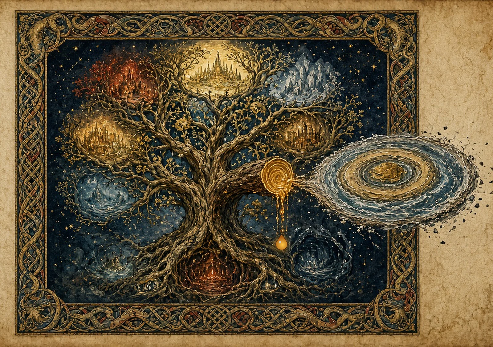
Prólogo. Lo que guarda el ámbar
Estrofa de apertura
Mira la miel que el musgo no mancha,
gota guardada en la grieta del golpe.
Nueve son los nombres que nombran los niños;
del décimo duerme la deuda sin dueño.
Fresno de furia, la rama que falta
cayó con su carga de cárceles y cantos.
Oye lo olvidado, hijo de otra orilla:
lo que se recuerda vuelve a ser rama.
Tienes en la mano una gota de ámbar. No pesa más que una avellana y está tibia, aunque nadie la ha calentado. Si la levantas contra la luz del amanecer, verás dentro una mota más oscura, como un insecto que se quedó dormido en la resina hace mucho tiempo. No es un insecto. Soy yo.
Cuando aún había quien me diera nombre, me llamaban hunangfal, que en la lengua antigua quiere decir «rocío de miel». Es el rocío que suelta el fresno que sostiene los mundos: cae de sus hojas de noche, baja por la corteza hasta los valles y las abejas lo buscan antes que a ninguna flor. Yo caí en el peor momento en que se puede caer, con el primer golpe de un hacha, y la resina de la herida me tragó antes de que tocara el suelo. Con los milenios, la resina se hizo piedra dorada. Lo que el árbol sabía en aquel instante sobre la tierra que estaba perdiendo se quedó aquí dentro, conmigo. Por eso puedo hablar.
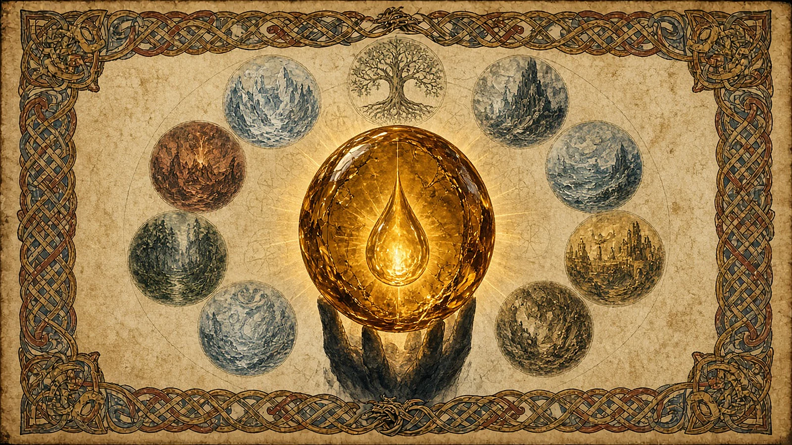
No soy gran cosa. No sé tejer, no sé luchar y no sé mentir, que en el lugar adonde vas es casi una desgracia. Lo que sé hacer es recordar, y eso es justo lo único que allí no ha hecho nadie en mucho tiempo.
Te lo contaré como lo cuentan los escaldos, los poetas que en los salones del norte cobran en anillos lo que pagan en versos. Ellos empiezan siempre por el árbol, así que yo también.
El fresno se llama Yggdrasil, «el caballo del Terrible». El Terrible es uno de los muchos nombres de Odín, el señor de la furia y del saber, que se colgó nueve noches de sus ramas para aprender las runas. Los poetas, que son gente rara, llaman «caballo» a la horca. Así que el árbol que sostiene los mundos lleva el nombre de la horca de un dios, y nadie en los nueve mundos lo encuentra extraño.
Cuenta conmigo esos mundos, por si los has olvidado. Asgard, «el cercado de los ases», donde viven los dioses. Midgard, «el cercado del medio», donde viven los hombres y donde tú, si es que eres lo que creo, has vivido hasta hace poco. Vanaheim, el mundo de los vanes, los dioses de la cosecha y del mar. Jotunheim, el mundo de los gigantes. Alfheim, el de los elfos de luz, y Svartalfheim, el de los elfos oscuros, que algunos llaman enanos. Niflheim, «el mundo de la niebla», frío como el fondo de un pozo. Muspelheim, el mundo del fuego. Y Helheim, adonde van los muertos que no murieron con la espada en la mano.
Nueve. Los niños los cuentan con los dedos y les sobra uno. Nadie les ha explicado nunca para qué sirve ese dedo.
Sirve para el décimo. Se llamaba Valgrund, «el suelo de los caídos», y colgaba del fresno como los otros nueve, de una rama suya, con sus ríos, sus muertos y su cielo. Hoy no figura en ningún cantar. Ningún libro lo menciona, ninguna vidente lo ha soñado y ningún dios se acuerda de él. Ni siquiera el árbol conserva la cicatriz del corte: la corteza se cerró hace tanto tiempo que ya no hay costura que buscar. Si en algún salón oyes decir que en Asgard aún se ve la herida, sonríe y sirve otra copa. Quien lo dice no sabe nada.
Los únicos rastros de Valgrund están dentro de Valgrund. Yo soy uno de ellos. Los otros son piedras que hablan si sabes leerlas, espíritus de la tierra que hablan si sabes pagarles, gigantes atrapados en el hielo que hablan si no te comen antes y muertos que no duermen y que hablan aunque no quieras escucharlos. Lo que no vi con mis ojos de miel, me lo contaron ellos. Te avisaré cuando sea así.
Antes de empezar debes saber una cosa, la única que de verdad importa, y la diré sin versos para que no la confundas con un adorno: en el árbol, lo que se recuerda sigue unido.
Un mundo no cuelga del fresno solo por la madera. Cuelga también de la memoria de los otros mundos, como una barca cuelga de su amarra y de quien sabe dónde la dejó. Mientras alguien en algún salón se acuerde de una tierra, esa tierra tiene un hilo que la ata al tronco. Por eso, cuando Odín quiso perder un mundo, no le bastó con el hacha: tuvo que hacer que todos lo olvidaran. Y por eso yo, que no he olvidado, soy un peligro pequeño y dorado.
Lo que voy a contarte es un hilo. Si lo recuerdas, algo vuelve a tenderse. No sé si eso es bueno. No soy quién para saberlo, porque soy una gota y las gotas no juzgan: caen.
Pero vas a caer tú también, y pronto, y prefiero que llegues sabiendo algo. A los que llegan sin saber nada les cuentan una historia. Es bonita y casi verdadera, y te la contarán con tanta dulzura que te costará no creerla. Yo te contaré la otra.
Siéntate. Acerca la gota al fuego, que el ámbar cuenta mejor cuando está tibio.
Capítulo 1. Antes del hilo
Al principio no había arena, ni mar, ni hierba. Tampoco había dioses que pudieran echarlas de menos. Había un vacío tan grande que no tenía bordes, y los que vinieron después lo llamaron Ginnungagap, «el gran vacío abierto», porque a lo que no tiene medida hay que darle por lo menos un nombre.
Al norte del vacío estaba la niebla, y en la niebla, una fuente. Se llamaba Hvergelmir, «el caldero que ruge», y no era una fuente como las que conoces, de las que brotan de una roca para que beban los rebaños. Era una boca abierta en lo más hondo del frío, y de ella salían once corrientes.
Esas corrientes son los Elivagar, «las olas de tormenta». Escucha bien, porque todo lo demás depende de esto: no eran ríos. Los ríos se los inventaron después, cuando hizo falta que lo fueran. Eran las primeras cosas que se movieron en el mundo, antes de que hubiera un mundo en el que moverse. Cada una corría a su manera. Una era fría y quieta, como el agua de un lago al alba. Otra corría con un ansia que no se saciaba nunca. Otra tragaba todo lo que se le acercaba. Otra se partía en un resplandor que no llegaba a caer. Ninguna tenía orilla, porque todavía no se habían inventado las orillas.
Bajaban rugiendo de Hvergelmir hacia el vacío, y por el camino se espesaban. Llevaban dentro algo amargo, un veneno que no era veneno para nadie, porque aún no había nadie a quien matar. Cuando ese veneno llegó al frío del abismo, se endureció. Las corrientes empezaron a dejar escarcha a su paso, capa sobre capa, como deja sal el mar en las rocas. La escarcha se amontonó en el fondo de Ginnungagap durante un tiempo que nadie contaba, porque nadie había inventado tampoco el tiempo.
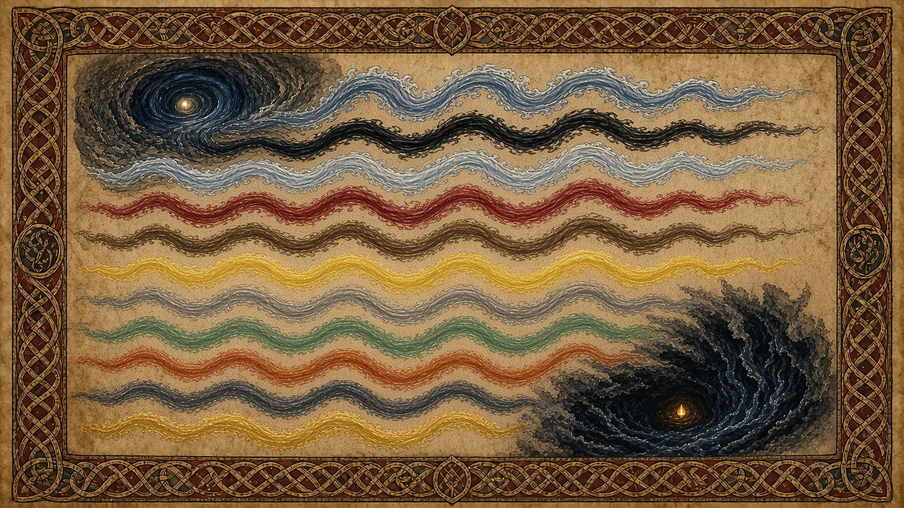
Del sur llegaban chispas del fuego de Muspelheim. Donde la chispa tocó la escarcha, la escarcha goteó, y de aquel goteo nació el primer gigante. Se llamaba Ymir, nombre que unos entienden como «el que brama» y otros como «el gemelo», porque en él todo era doble: el hielo y el calor, la vida y lo que sobraría de ella.
Fíjate en el orden. Primero las corrientes, luego la escarcha y luego Ymir. El primer ser vivo del mundo nació de lo que dejaron atrás los Elivagar, como nace un niño de lo que la madre no sabe que lleva dentro.
Después vinieron los dioses. Odín y sus dos hermanos mataron a Ymir, y no fue un combate hermoso ni largo. Con su carne hicieron la tierra; con sus huesos, las montañas; con su sangre, el mar; con su cráneo, la bóveda del cielo, y con los sesos, las nubes. Así se hicieron los mundos, a golpe de cuchillo de carnicero. Los dioses quedaron satisfechos con su trabajo.
Las corrientes lo vieron todo. No tenían ojos, pero lo vieron. Vieron cómo se descuartizaba lo que había nacido de su escarcha y cómo se repartía en salones, campos y fiordos para gente que no tenía ninguna idea de dónde venía su suelo. Si en aquella hora las corrientes sintieron algo, no lo dijeron. El agua es paciente. Recuérdalo también.
Más tarde llegaron las nornas, las tejedoras del destino. Son tres mujeres que viven junto a un pozo al pie del fresno, y la mayor se llama Urd, «lo que fue». Cada mañana sacan agua del pozo, riegan las raíces para que el árbol no se seque y tejen. Tejen la vida de los dioses y la de los hombres, la de los gigantes y la de los enanos. Tejen cuándo nace cada uno y cuándo cae, cuánto dura un reino y cuánto un juramento. Todo lo que existe en los mundos del árbol tiene su hebra en ese telar, también Odín, que conoce la suya y sabe que acaba en las fauces de un lobo.
Pero el telar se montó después de que todo empezara, y lo que ya existía antes no tiene hebra.
Las nornas pasaron el hilo junto a las corrientes, una vez y otra vez, y el hilo no las tocó. No fue por descuido. No había forma de atarlas a un tejido más joven que ellas, igual que una hija no puede atar a su madre a la cuna. Por eso los Elivagar no tienen destino. No deben nada a nadie, nadie les ha fijado una hora y nadie les ha prometido un final.
Hay un dicho que los gigantes repiten con una sonrisa que no gusta a nadie: lo que no está tejido no está obligado. Odín lo oyó una vez y no se rio.
A los dioses no les gustaba tener en sus mundos algo sin hebra, así que hicieron lo que hacen siempre con lo que no entienden: lo encauzaron y le pusieron nombre. Abrieron lechos de roca, levantaron orillas y empujaron las corrientes hacia ellos, igual que un labrador cava acequias para que la crecida no le arrase el campo. Las corrientes se dejaron llevar, o lo fingieron. Desde entonces corrieron como ríos, con orillas, vados y peces, y en las orillas se sentaron los hombres a lavar la ropa sin saber qué lavaban.
Los dioses las llamaron por sus nombres, que eran suyos desde antes de que nadie los dijera, y dejaron que los hombres creyeran que eran nombres de río. Con el tiempo, los nombres bajaron a Midgard, donde las madres los cantan a los niños para dormirlos. Es una canción de cuna. La sabes. Aunque creas que no, tus labios la saben:
El cantar de los once ríos
Svol y Slid, la serena y la sombría,
Sylg que sorbe los sorbos del mundo,
Gunnthra la de guerra, Gjol la que gime,
Fjorm la que fuga, Fimbulthul de fábulas,
Leiptr que luce y la loba Ylgur,
Vid la vasta y Hrid la ventisca:
duerme, que duermen los once en su dique.
Para que no te pierdas, te diré lo que quieren decir esos nombres, sin rodeos. Svol es «la fresca», la serena. Slid es «la temible». Sylg, «la que traga». Gunnthra, «el ansia de batalla». Gjol, «la que resuena». Fjorm, «la que se apresura». Fimbulthul, «el gran recitador». Leiptr, «el relámpago». Ylgur, «la loba». Vid, «la ancha». Y Hrid, «la ventisca».
Las madres de Midgard no saben nada de esto. Para ellas son once ríos de un país lejano, de esos que se nombran en las canciones porque suenan bien. Lo cantan con la boca medio dormida, junto al fuego, y el niño se duerme al llegar a la loba. Así es como un nombre verdadero sobrevive a todo: escondido en una nana, como un cuchillo en un cesto de lana.
Tú la aprendiste así. Por eso te necesitan.
Capítulo 2. La rama de los once ríos
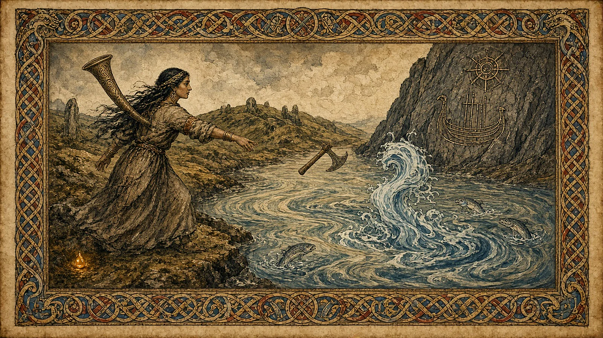
El fresno tiene más ramas de las que nadie ha contado, pero solo diez llevaban mundo. La décima salía del tronco por el lado de poniente, más baja que las otras y más larga, y se abría como una mano que sostiene algo con cuidado. En esa mano estaba Valgrund.
No era el más grande de los mundos ni el más rico. No tenía el oro de los dioses, ni las forjas de los enanos, ni los salones de hielo de los gigantes. Tenía agua. Cuando los dioses se cansaron de vigilar once corrientes repartidas por sus mundos, las juntaron todas en aquella rama apartada, como quien lleva la crecida a un valle donde no vive nadie importante. Allí abrieron lechos de piedra para que corrieran entrelazadas, unas por encima de otras y otras por debajo, como las hebras de una trenza que nadie ha terminado. Valgrund se volvió una tierra de vados, de estuarios y de puentes de troncos, donde nunca estabas a más de medio día de un río y nunca sabías del todo hacia dónde corría.
Las ramas del fresno no colgaban de aquel mundo, sino que lo atravesaban. Entraban por el lado del tronco y se hundían en la tierra como venas en un brazo, y por ellas subía la savia y bajaba el rocío. Donde una rama pasaba cerca de la superficie, la hierba crecía más verde y los pozos sabían a corteza. Los niños de allí se dormían escuchando correr dentro de la tierra algo que no era agua.
En las orillas vivía un pueblo cuyo nombre se ha perdido. Hoy los llamo como los llama la tierra, los Gleymdir, «los olvidados». Entonces no lo estaban. Tenían nombres, como tú, y los decían en voz alta.
Eran gente de bronce. Fundían el cobre de las vetas verdes de sus colinas con el poco estaño que les llegaba, a saber por qué caminos, y con aquel metal dorado y blando hacían hachas, broches, discos de sol y trompas. Las trompas eran lo que más querían. Las llamaban lures, en singular lur: tubos de bronce largos como un hombre, curvados como el cuello de un cisne, que se tocaban de dos en dos, uno frente a otro, y sonaban como un buey que hubiera aprendido a cantar. En las rocas lisas grababan barcos de muchos remos, carros, hombres con hachas levantadas y círculos de sol con radios. A sus muertos los enterraban bajo túmulos redondos de tierra y piedra, con las manos cruzadas sobre la espada.
Y daban de comer a los ríos.
La mujer de la que te voy a hablar tocaba la trompa en las fiestas del solsticio. Su nombre no lo sé, porque la tierra lo olvidó antes de que yo naciera, así que la llamaré la Tañedora. Tenía las manos grandes, con callos en los labios de tanto soplar, una risa que se oía de una orilla a otra y un hermano pequeño que pescaba con ella.
Aquel año los salmones no subían. Las redes salían vacías, y el invierno venía mirando por encima de las colinas. La Tañedora hizo lo que habían hecho su madre y la madre de su madre. Bajó al río al atardecer con el hacha de bronce más hermosa de la casa, una que no había cortado nunca nada porque estaba hecha para dar y no para cortar. Se subió a la laja de la orilla, se colgó la trompa del hombro y cantó lo que se canta:
Canto de ofrenda de los Gleymdir
Bronce te brindo, bebedor de barcas;
toma mi hacha, trae la trucha.
Llena las redes, lleva lo que quieras,
pero que pagues primero, padre.
Soltó el hacha. El río la recibió sin ruido, como recibe una mano una moneda que ya esperaba.
A la mañana siguiente, las redes no se podían levantar de tanto peso. Hubo salmón para ahumar, para salar y para vender río abajo, y la aldea cantó tres noches seguidas. Los Gleymdir sabían que el río da y después pide, porque siempre había sido así. Lo que no sabían, porque nadie se lo había dicho nunca, es que lo que tenían delante no era un río.
En la luna siguiente, el hermano pequeño de la Tañedora bajó a vaciar las nasas en una mañana de calma. El agua le llegaba a la rodilla, y nunca le había llegado más arriba en aquel vado. Lo encontraron tres días después, río abajo, con los ojos abiertos y las manos llenas de truchas. La Tañedora no tocó la trompa en todo aquel invierno. Cuando volvió a tocarla, sonaba más grave.
Así era el trato con las corrientes, y así sigue siendo para quien lo busque: dan de verdad y cobran de verdad, y nunca dicen el precio antes de cobrarlo.
En el extremo de Valgrund donde las ramas entraban desde el tronco, un puente de piedra salía de los acantilados hacia el cielo. Los Gleymdir lo llamaban Bruarspord, «la cabeza del puente», aunque solo veían el arranque: el resto se perdía hacia arriba en una bruma clara. Por ahí bajaban, muy de tarde en tarde, los dioses, cuando querían ver cómo seguían sus ríos. Bajaban también mercaderes de otros mundos, algún enano con su fardo, algún gigante que no se fiaba de nadie y, a veces, una mujer con un manto de plumas que miraba a los guerreros como se mira el ganado antes de la feria.
De madrugada, los sillares del puente amanecían cubiertos de un rocío espeso, en gotas grandes como avellanas, que se pegaba a los dedos y sabía dulce. Era el rocío del fresno, el mío, el que cae de las ramas a los valles. Los niños gleymdir subían descalzos a lamer las piedras antes de que el sol las secara, y los viejos decían que quien lo probaba recordaba sus sueños.
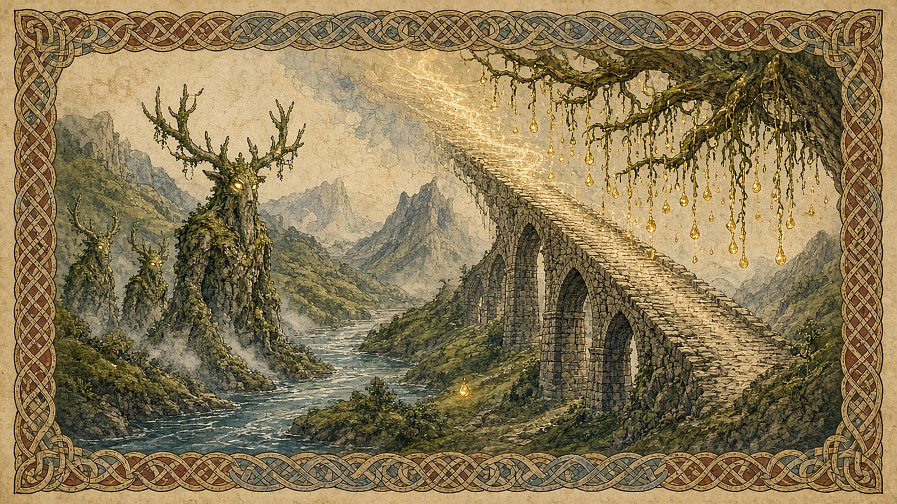
Al pie del puente vivían los landvetir, «los espíritus de la tierra», que guardan cada rincón de un mundo como un perro guarda una casa. No se dejaban ver bien. Unas veces eran una zorra que te miraba demasiado rato; otras, una piedra con algo parecido a unos ojos, o un niño que no era de ninguna familia. Se les dejaba leche en las piedras huecas, y a cambio no dejaban que el puente se soltara. Les gustaba la gente de bronce, que les cantaba, y no les gustaban las corrientes, a las que no se puede ladrar.
La noche en que los ríos corrieron hacia arriba, la Tañedora estaba despierta, porque desde la muerte de su hermano dormía poco.
Salió a orinar detrás de la casa y oyó un ruido que no conocía. No era el murmullo del vado ni el golpe del salmón contra la corriente, sino un sorbo largo, como el de alguien que bebe de un cuenco sin respirar. Bajó a la orilla con un tizón en la mano y vio que el río estaba subiendo por su propio lecho, hacia la fuente y no hacia el mar. Las piedras del fondo quedaban al aire y se veían las raíces de los juncos. Los peces se agitaban en el barro. Río arriba, el agua se amontonaba como se amontona el trigo en la era, cada vez más alta, cada vez más quieta.
Miró a las colinas y vio que todos los ríos de Valgrund hacían lo mismo. Brillaban a la luna como once cuchillos vueltos hacia atrás.
A la mañana siguiente los ríos volvían a correr hacia abajo, como si nada. En las orillas, los ancianos dijeron que había sido un sueño, y en las forjas, que había sido la luna. Nadie se acordó de dar de comer a los ríos aquella semana. La Tañedora no se lo contó a nadie, porque no había nadie que la fuera a creer. Pero aquella mañana descolgó la trompa de la pared, la limpió con arena y la dejó junto a la puerta, como se deja el hacha cuando se oyen pasos de noche.
Capítulo 3. Cuando los ríos se alzaron
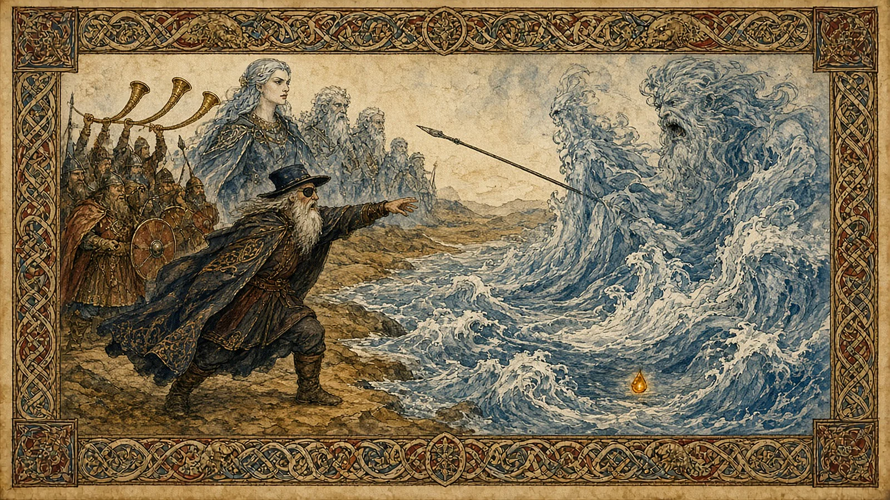
Snaebjorg, cuyo nombre quiere decir «amparo de nieve», era una giganta de la montaña. Tenía la piel gris y agrietada como la roca vieja, y la paciencia de las piedras que han visto pasar muchos inviernos. Había bajado a Valgrund por el puente a cambiar sal de roca por bronce, y estaba acampada en una loma sobre el valle grande, donde se juntaban cuatro ríos. Ella fue la primera que lo vio, y a ella se lo oí contar mucho después, desde dentro del hielo, con una voz que ya no movía los labios.
Primero, el silencio. Los cuatro ríos dejaron de sonar al mismo tiempo, como cuando una sala entera se calla porque alguien ha desenvainado. Luego, el agua se puso en pie.
No hay otra forma de decirlo. Los ríos se levantaron de sus lechos como se levanta un hombre que ha estado mucho tiempo tumbado, despacio al principio y luego de golpe. Cada corriente se alzó con una forma hecha de sí misma, lo que los antiguos llamaban su hamur, «la forma, la piel»: la piel de guerra que se ponen las cosas que no tienen cuerpo cuando quieren que se las vea.
En el estuario se alzó una ola que no rompía. Subió y subió, y se quedó suspendida sobre la costa, alta como un acantilado, con costillas de ballena flotando dentro como huesos en una jalea. En las colinas de los túmulos se alzó una loba hecha de vetas rojizas, que aullaba con muchas voces a la vez. En el bosque se alzó una oscuridad más negra que la noche, que no proyectaba sombra porque ella misma lo era. Sobre las fuentes calientes se alzó un relámpago que se quedó a medio caer, quieto en el aire, crujiendo. Y en el horizonte del este, la línea del cielo se curvó como unos labios que se entreabren.
Snaebjorg contó las formas, porque los gigantes cuentan todo lo que temen. Contó diez. Donde debería haber estado la undécima, en un recodo del valle, solo había hierba aplastada en círculo y un viento que soplaba hacia fuera desde un punto en el que no había nada. Los túmulos de los Gleymdir dicen que la primera en alzarse fue la loba; los gigantes, que fue la ola. Yo no lo vi, porque aún no había caído del árbol. Lo único que sé, porque el árbol lo notó en todas sus hojas, es que antes de que se levantara la primera hubo un viento.
Querían lo suyo. Eso fue lo que entendió Snaebjorg, que entiende de rencores antiguos. Habían visto descuartizar a Ymir, hecho de su escarcha. Habían visto cómo los mundos se cortaban de su carne y cómo los dioses las encerraban en acequias. Habían esperado más que nadie. Y ahora, en la rama apartada donde los dioses las habían juntado para no tener que vigilarlas, habían descubierto que juntas pesaban más que el árbol.
La ola avanzó hacia los poblados de la costa. Los Gleymdir subieron a las lomas con sus niños a cuestas y las trompas al hombro, y desde allí tocaron todas a la vez, de dos en dos, durante toda la noche, hasta que el sonido subió por el puente y alguien, arriba, lo oyó.
Odín bajó por Bruarspord al tercer día.
Venía como viene a los campos de batalla: con un solo ojo, porque el otro lo dejó hace mucho en prenda a cambio de un trago de saber; con un manto azul oscuro y un sombrero de ala ancha calado hasta la ceja, y con su lanza. Sobre los hombros llevaba sus dos cuervos, Huginn, «el pensamiento», y Muninn, «la memoria», que cada mañana vuelan sobre los mundos y cada noche le cuentan al oído lo que han visto. Detrás venían los einherjar, «los que luchan solos», los mejores guerreros caídos de Midgard, a los que sus doncellas habían elegido en mil campos y que vivían con él en el Valhalla, «el salón de los caídos». Allí pelean cada día por gusto y cada noche se curan las heridas para pelear al día siguiente. Llevaban siglos esperando una guerra de verdad. Bajaron cantando.
Los gigantes vinieron también, y aquello no se había visto nunca ni se volvió a ver. Los jotnar, que es como se llama en la lengua antigua a los gigantes, son enemigos de los dioses desde el principio, y lo serán hasta el final. Pero también ellos son hijos de la escarcha de Ymir, y ningún hijo quiere que la madre vuelva para tragárselo. Bajaron gigantes de la montaña con mazas de piedra y gigantes de escarcha con lanzas de hielo azul, y Snaebjorg se puso al frente de los suyos porque ya estaba allí. Odín la miró de arriba abajo, con el único ojo, y ella le devolvió la mirada con los dos.
—No es por ti —le dijo.
—Nunca lo es —contestó Odín.
Los Gleymdir se pusieron a un lado, con sus hachas de bronce y sus escudos de cuero, sin saber muy bien a quién temer más. La Tañedora estaba entre ellos, con la trompa.
Odín subió a la loma de Snaebjorg y miró el valle. Los cuervos se le levantaron de los hombros y se quedaron dando vueltas sobre la loma, sin un graznido, cosa que no hacen nunca. Abajo, las diez formas esperaban de pie sobre sus cauces vacíos: la ola, la loba, la oscuridad, el relámpago, la boca del horizonte y las otras, menos claras, más lejos. Y en el recodo, el círculo de hierba aplastada, con su viento sin nadie. Odín lo miró más rato que a las otras. Luego bajó.
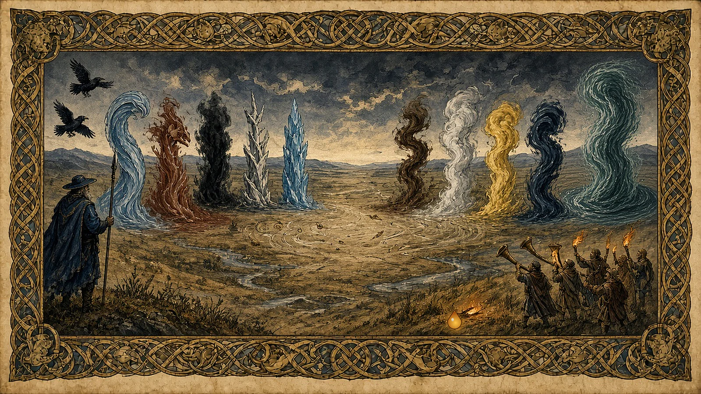
La hueste se reunió en el vado grande, donde la ola tenía que pasar para llegar a las colinas. Fue la batalla más extraña de las que se han librado entre los mundos, y no hay ningún cantar de los nueve mundos que la recuerde. Solo esta tierra la recuerda:
Cantar de la batalla del vado
Se alzaron los ríos de raíz y de rabia,
los vados volvieron de vena a veneno.
Vino el Tuerto con tropa y con trompas,
gigantes de grava y gente de bronce.
Lanzó la lanza, la lluvia la lame:
no tiñe la punta lo que el tejido no toca.
Cayó el caudillo en la corriente crecida,
y la hija del monte lo alzó en hombros.
Odín abrió la batalla como abrió la primera guerra de los mundos: arrojando su lanza por encima de la hueste enemiga. Así la consagraba. Todo lo que muriera bajo aquella lanza sería suyo, y lo que es suyo no puede vencerle.
La lanza voló en un arco alto y limpio y atravesó la pared de la ola.
No la hirió. El agua se abrió en un agujero redondo, por el que se vio por un instante el cielo del otro lado, y se cerró detrás como se cierra una cortina. Cayeron unas gotas. No hubo sangre, ni grito, ni consagración. La lanza siguió volando, se clavó en una colina lejana y se quedó vibrando como una cuerda pulsada.
Los einherjar dejaron de cantar.
Odín tardó en entenderlo, aunque entiende las cosas antes que nadie. Su lanza consagra lo que está en el tejido de las nornas, porque todo lo que tiene hebra puede ser ofrecido, y lo que se ofrece pertenece. Pero las corrientes no tenían hebra. No se las podía ofrecer a nadie, ni siquiera a él. No eran de nadie, y nunca lo habían sido.
La ola bajó sobre el vado.
Los einherjar pelearon como pelean los que no pueden morir del todo: sin miedo y sin sentido. Se lanzaban contra el agua con las espadas en alto, el agua se los tragaba y los escupía en la orilla, rotos, y volvían a levantarse. La loba entró por el flanco de los gigantes y no mordía carne: mordía rencores. Los gigantes empezaron a pegarse entre ellos por viejas cuentas que no recordaban tener. La oscuridad se tragó a una fila de Gleymdir con sus antorchas, y no se volvió a ver ninguna.
Odín se metió en el vado con el agua por la cintura, para alcanzar su lanza o para alcanzar algo. La corriente le cogió las piernas.
Lo arrastró como arrastra el río un tronco. Le quitó el sombrero y lo hundió. Lo golpeó contra las piedras del fondo y le llenó la boca y el ojo de agua amarga, más vieja que el primer gigante. Y Odín, que se colgó nueve noches del árbol sin quejarse, notó algo que no había notado nunca: que se iba.
Las nornas le tejieron una muerte hace mucho tiempo, y él la conoce. Morirá el último día, el día del Ragnarok, «el destino de los poderes», cuando los dioses caigan y el lobo abra las fauces. Esa hebra, que tanto le pesa, es también su escudo. Mientras su hora no llegue, nada que esté tejido puede matarle antes, porque el tejido no se contradice. Por eso puede meterse en cualquier batalla de los nueve mundos sabiendo que saldrá de ella.
Pero lo que le arrastraba no estaba tejido. Para las corrientes, la hora de Odín no significaba nada. Podían ahogarle allí mismo, una mañana cualquiera, en un vado de un mundo apartado, muchos siglos antes de que llegara el lobo. Y si Odín moría antes de su hora, el tejido entero se rompería por esa hebra, porque todas las demás están cosidas a la suya.
Una mano grande y gris se cerró sobre su manto.
Snaebjorg lo sacó del agua como se saca a un cordero de una zanja: por el pescuezo, sin ceremonia. Se lo echó al hombro, subió la orilla con el agua chorreándole por las grietas de la piel y lo dejó caer en la hierba. Odín tosió agua durante mucho rato. Cuando pudo hablar, no le dio las gracias.
—Aquí puedo morir —dijo—. Antes de mi día.
—Entonces no mueras aquí —dijo la giganta, y volvió al vado.
Odín se quedó tumbado mirando el cielo con su único ojo, mientras en el valle sus guerreros caían y se levantaban y volvían a caer. Pensó lo que piensa siempre: qué se puede ganar y a qué precio. Cuando se levantó, ya no buscaba su lanza.
Lo que no se puede matar, pensó, tal vez se pueda encerrar.
Capítulo 4. Once nudos, once celdas
Encendieron el fuego en lo alto de la loma, donde la loba no llegaba, y se sentaron alrededor cuatro que no se habrían sentado juntos por ningún otro motivo.
Odín, todavía con el manto húmedo. Snaebjorg, que no cabía bien junto al fuego y se sentó un poco atrás, de modo que su cara quedaba en la sombra y sus rodillas en la luz. La Tañedora, porque los Gleymdir la mandaron como habían mandado siempre a quien hablaba por ellos con los ríos. Y Hamar, un enano herrero que había bajado de Svartalfheim con su gente cuando oyó que en Valgrund hacía falta metal. Su nombre quiere decir «martillo», y también «roca», porque para un enano es lo mismo. En aquel entonces todavía hablaba.
—Lo que no está vivo no se mata —dijo Odín—. Lo que no está tejido no se consagra. Pero todo lo que tiene nombre se puede atar.
—Tienen nombres de río —dijo la Tañedora—. Los cantan nuestras madres.
—No son nombres de río. —Odín removió las brasas con un palo—. Son los suyos, los verdaderos, los que tenían antes de que hubiera nadie para decirlos. Nosotros solo dejamos que los hombres creyeran otra cosa. Saberlos no es lo difícil, porque los sabe cualquier niño. Lo difícil es saber cuál es de cuál, porque cuando se ponen la piel de guerra ninguna dice cómo se llama. Yo lo sé.
Hamar escupió en el fuego, que es como dicen los enanos que algo les interesa.
—Atar el agua —dijo—. Nadie ha atado nunca el agua.
—Nadie lo ha intentado en el orden correcto —dijo Odín.
Y les dijo el orden. Primero, romper la forma: la piel de guerra que cada corriente se pone para luchar, la ola, la loba o la oscuridad, porque mientras la lleva puesta la corriente está entera y no oye. Segundo, decir el nombre verdadero en el momento en que la forma se deshace, cuando la corriente está desnuda y escucha. Tercero, anudar: rodear lo nombrado con una atadura hecha para esa corriente y no para otra, y apretar. Lo nombrado y anudado no muere, pero se duerme y se condensa en un nudo que cabe en la mano.
Los Gleymdir lo aprendieron en forma de verso, porque así se aprende lo que no se debe olvidar. Todavía se lee en las piedras:
La ley de la atadura
Quiebra la carne que la corriente se cose,
nombra el nombre que nació con ella,
anuda el agua y que el agua se aquiete.
Las ataduras las hizo Hamar. Se llaman fjotrar, que no quiere decir otra cosa que «ataduras», porque los enanos no gastan palabras en lo que sirve.
Montó la forja en una cueva sobre el valle y trabajó sin dormir mientras afuera la batalla seguía a ratos. Escuchaba lo que le contaban los que bajaban del frente: cómo era cada forma, qué la hería, qué la hacía retroceder. Para cada corriente hizo una atadura distinta, porque cada agua se escapa por un sitio diferente. Para la ola, una cuerda de algas y fibra de duna trenzadas, que el mar no pudre porque las reconoce como suyas. Para la loba, un cordón teñido con algo que nunca quiso decir. Para la que pudre lo que toca, una cadena de acero con hilos de plata embutidos, porque la plata es lo único que la podredumbre no muerde. Para la oscuridad, una trenza tan fina y clara que parecía cristal hilado. Así hasta once.
Cuando terminó la primera, la de algas, la colgó de una viga y se quedó mirándola un rato largo, con las manos llenas de sal.
—Esto no aguantará siempre —dijo.
—Nada aguanta siempre —dijo la Tañedora, que le traía el agua.
—Las cosas que yo hago, sí —dijo Hamar. Y siguió trabajando.
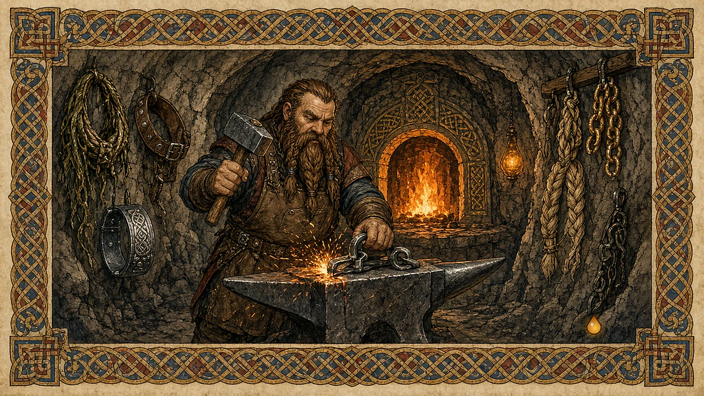
Al final colgaban once de la viga. Diez se veían bien a la luz de la fragua. La undécima quedaba al fondo, donde la luz no llegaba, y Hamar nunca dijo de qué la había hecho.
La primera atadura la hizo la Tañedora, y la hizo con la ola.
Odín le dijo el nombre al oído, una sola vez, en la loma, y ella lo guardó en la boca como se guarda una brasa. Esperaron a la marea baja. Cuando el mar se retiró, la ola que no rompía quedó más baja y más flaca, con los huesos de ballena asomando como los palos de un barco hundido. Los einherjar y los gigantes la atacaron entonces con todo lo que tenían: mazas, hachas, lanzas, piedras arrancadas del acantilado. La ola se rajó por fin, como se raja el hielo de un lago en primavera, y se derramó por la playa en un torrente sucio de espuma y de costillas.
Pero no se dice el nombre cuando la forma cae. Se dice cuando calla.
La Tañedora esperó en la arena mojada, con la trompa a la espalda y la cuerda de algas en las manos. La corriente rota se recogía y volvía a empujar, ola tras ola, bramando, y en cada bramido no se oía nada más. Luego una ola se retiró más lejos que las otras, y el mar se quedó quieto. No fue un instante. Fue una calma larga, de las que hay entre dos olas grandes en los días de marea baja: el agua se aleja, se queda pensando y tarda en volver. El bramido calló. Se oyó una gaviota. Se oyó respirar a la gente de la loma: una vez, dos, tres, cuatro.
En aquel silencio, la Tañedora dijo el nombre. No lo gritó. Lo dijo despacio, como se dice el nombre de alguien a quien se quiere despertar sin asustarle, y tuvo tiempo de sobra para decirlo bien.
El mar la escuchó. Lo que quedaba de la ola se encogió sobre sí mismo como un animal que se acurruca, y ella le echó la cuerda alrededor y apretó. Cuando abrió las manos, tenía en ellas un nudo de sal dura, del tamaño de un puño, y si se lo acercaba al oído oía rugir el mar.
Lloró, porque aquel era el río al que había cantado toda su vida, el que le había dado los salmones y le había quitado a su hermano. Luego se secó la cara y fue a buscar la segunda atadura.
Las diez siguientes costaron más, y alguna costó mucho. No te contaré ahora cómo se rompió cada forma ni cómo se nombró cada corriente: lo verás tú mismo, si llegas tan lejos, porque cada una se ató a su manera y cada manera se puede repetir. Solo te diré cómo era la cárcel que construyeron alrededor de ellas, porque eso sí lo vi, desde arriba, en la memoria del árbol.
Odín no quería una cárcel con muros. Los muros se saltan. Quería una cárcel hecha de las propias presas. Mandó a los gigantes y a los enanos partir Valgrund en anillos, uno dentro de otro, como los anillos que deja el año en el tronco de un árbol, y entre anillo y anillo, como la línea oscura que separa un año de otro, dejó sitio para el agua. Once anillos, de la costa hacia el centro. En el anillo de fuera puso a la corriente más débil y en el centro, a la más temible. Las otras quedaron en medio, ordenadas de menos a más, como se ordenan los perros de una jauría según lo que muerden.
Y luego hizo lo que solo podía ocurrírsele a él. Alrededor de cada anillo hizo correr la corriente ya atada del anillo anterior, convertida en foso. La ola dormida de la costa se volvió un estrecho que ruge y que rodea el segundo anillo. La segunda corriente, atada, rodeó el tercero. Y así hasta el centro. Donde pasaba el agua, la tierra se rompía. Lo que había sido un solo país de vados y de puentes de troncos se quedó en islas: unas grandes como reinos pequeños, otras sembradas como piedras en un vado, y todas en círculo. Desde entonces, en Valgrund no se va de un anillo a otro andando.
Un foso así no deja pasar ninguna barca, salvo la de quien lleva el nudo de su corriente. El agua no se ahoga a sí misma: reconoce su nudo y se aparta, como un perro se aparta ante su dueño. Quien ató a la presa de un anillo puede bajar al siguiente, y quien no la ató, no. Era una cárcel pensada para carceleros, en la que solo puede avanzar el que ya ha cerrado una puerta.
Los Gleymdir juraron guardarla. Se repartieron por los anillos, cada familia junto a su agua dormida, y prometieron vigilar los nudos para que nadie los soltara, ellos tampoco. Muchos lo cumplieron hasta la muerte. Otros, no. De eso hablaremos.
En el centro, en el lugar donde las ramas del fresno entraban en Valgrund, los enanos labraron en la roca viva once celdas, abiertas en círculo como bocas de pozo. Allí se anclaba cada nudo, como se amarra una barca a su poste: cada presa dormía en su anillo, pero su atadura bajaba hasta el centro y se cerraba en su celda. La Tañedora grabó el plano de todo en una losa, con un cincel de bronce, para que los carceleros que vinieran después supieran dónde estaba cada cosa. Sobre cada celda grabó la marca de un nudo cerrado.
Grabó diez. Sobre la undécima, el cincel le tembló, o se le acabó la luz, o no sé qué. El trazo de aquella celda quedó más tenue que los otros, y no tiene marca.
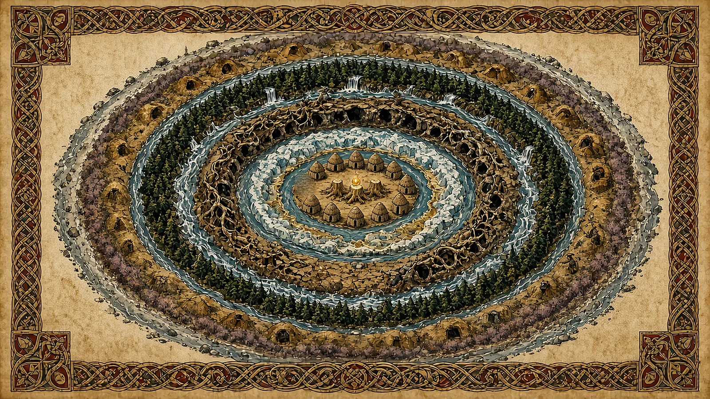
El árbol sintió cerrarse diez nudos, uno tras otro, como se siente que se cierra una herida: un tirón y luego alivio. El undécimo no lo sintió. O lo sintió y no quiso saberlo. Los árboles, como las personas, a veces prefieren no saber.
Odín no celebró nada. Se pasó la última noche sentado junto a los nudos del centro, mirándolos. Hacia el alba vio lo que temía. El nudo de sal estaba húmedo, sudaba un agua que no venía de ninguna parte, y si se lo acercaba al oído el rugido sonaba más cerca que la víspera. Los nudos se aflojaban, no ese día ni ese año, pero se aflojaban.
Entendió por qué. Más allá del puente, en los nueve mundos, todos se acordaban de las corrientes. Las madres seguían cantando la canción de cuna, los dioses sabían dónde estaban los ríos y los gigantes contaban la batalla en sus salones. Cada recuerdo era un hilo que salía de los nudos y subía por el puente hacia el árbol. Y por un hilo, por fino que sea, el agua acaba encontrando el camino.
La cárcel funcionaba. Lo que no funcionaba era el mundo de fuera.
Capítulo 5. El hacha sin nombre
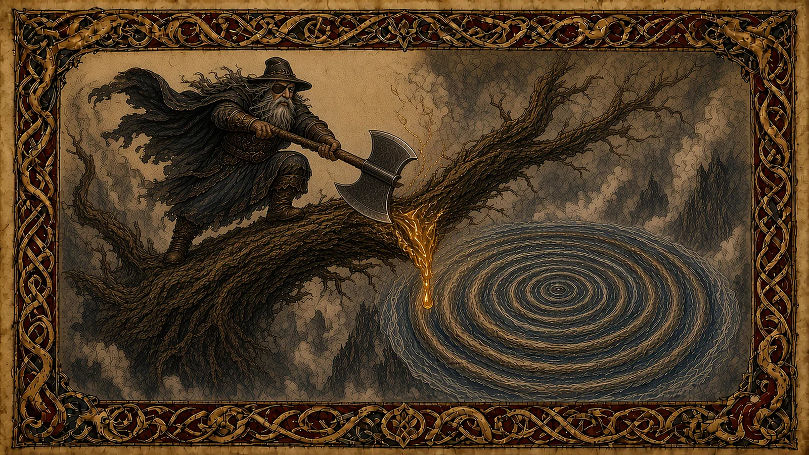
Odín volvió a la forja de Hamar al día siguiente, con el nudo de sal en la mano. Lo dejó sobre el yunque. El nudo sudaba.
—Aguanta —dijo el enano.
—Hoy —dijo Odín—. Mañana también. Dentro de mil años, menos. Dentro de diez mil, nada. Tiran de él desde fuera. Cada vez que alguien en los nueve mundos se acuerda de esta tierra, la cuerda se afloja un poco.
—Pues que no se acuerden.
Odín lo miró con el único ojo y el enano se dio cuenta de lo que había dicho. Se quedaron un rato callados, cada uno con su pensamiento, que era el mismo.
No bastaba con olvidar los ríos. Si se olvidaba a las presas pero no la tierra, alguien acabaría preguntando qué había en la tierra. Si se olvidaba la tierra pero seguía unida al árbol, la savia la seguiría recordando por dentro, como recuerda el cuerpo un brazo que ya no siente. Había que hacer las dos cosas: separar Valgrund del fresno y separarlo de la memoria. Cortar la madera y cortar el recuerdo, de un mismo golpe y para siempre.
—Necesito un hacha —dijo Odín.
Hamar la forjó en tres días y no pronunció ni una palabra en todo ese tiempo.
No fue por solemnidad. Los enanos dan nombre a todo lo que forjan, y lo hacen mientras forjan, en voz baja, golpe a golpe, porque creen que el metal se templa mejor si sabe cómo se llama. Las espadas famosas de los nueve mundos tienen nombres que se dijeron sobre el yunque antes de que existiera la hoja. Pero lo que tiene nombre se recuerda, y lo que se recuerda tira del árbol. Aquella hacha no podía tener nombre. Hamar se cosió la boca por dentro, como se cose un saco, para no decírselo por costumbre.
Le salió una hoja ancha, gris y lisa, sin ninguna marca: ni runas, ni el sello del herrero, ni un solo adorno donde se pudiera posar un recuerdo. El mango era de un fresno joven, sin cortar de ningún bosque conocido. Cuando Hamar la sacó del agua de temple, el vapor no hizo ruido.
Se la entregó a Odín con las dos manos. Odín la sopesó y asintió. Hamar abrió la boca para decir algo y no le salió nada. Lo intentó otra vez. No volvió a hablar nunca más, ni aquel día ni en los milenios que siguieron, y por eso la tierra lo llama Hamar el Callado. No sé si fue el precio del hacha o si, después de tres días, se le olvidó cómo se hacía. Los enanos dicen que da lo mismo.
El lugar donde las ramas entraban en Valgrund estaba al pie del puente, en el centro de los anillos, que era también el borde del mundo, porque por allí se asomaba la tierra al árbol. Los Gleymdir lo llamaban de una manera que hoy suena a profecía: Hoggstad, «el lugar del golpe». En su lengua, la misma palabra quería decir también «el punto débil», el sitio por donde se puede herir a alguien. Allí se juntaban las once celdas, el arranque del puente y las ramas, que entraban en la tierra gruesas como torres, con la corteza llena de surcos.
Odín mandó subir por el puente a todos los einherjar que aún se tenían en pie. Les dijo que volvieran al Valhalla, que la batalla había terminado. No les dijo lo que iba a pasar, y ellos subieron cantando otra vez, con menos ganas. Los que la corriente había deshecho, los que ya no podían levantarse, se quedaron tendidos en el vado junto a los Gleymdir muertos y a los gigantes caídos. Los vivos de Valgrund se quedaron en Valgrund: la gente de bronce, los gigantes que habían peleado al lado de Odín y los enanos de la forja. Nadie se lo pidió. Nadie se lo preguntó tampoco.
Odín subió solo por el puente, sin más compañía que sus dos cuervos, hasta el tramo en que las ramas corrían junto a la baranda, del lado del árbol. Allí los espantó con la mano, y los cuervos se fueron volando hacia la copa, lejos, porque lo que iba a hacer no debían verlo ni contarlo. Se quitó el manto, pasó por encima de la baranda y bajó a la rama mayor. Se agazapó sobre ella como un leñador sobre un tronco caído, con los pies bien plantados en la corteza, escupió en las manos y levantó el hacha.
El primer golpe lo dio en la rama mayor.
Cantar del hacha
Primero, la piel: se partió la corteza.
El hacha mordió la rama. La madera gritó como grita un animal grande cuando la lanza le entra, un sonido que bajó por el tronco del fresno hasta las raíces y subió hasta la copa, y en los nueve mundos los perros levantaron la cabeza sin saber por qué. De la herida salieron astillas largas como lanzas y una resina espesa, dorada, que olía a miel y a sangre. Y de una hoja muy alta, sacudida por el golpe, se soltó una gota de rocío.
Era yo. Caí despacio, como caen las cosas pequeñas, y vi pasar por delante la corteza herida, el hacha, el ojo de Odín, que no me miró, y abajo, muy abajo, la tierra de los once anillos, que todavía no sabía que se iba. La resina me recogió antes de que tocara nada. Se cerró sobre mí, tibia y espesa. Ahí empecé yo.
Segundo, la savia: sangró sin sonido.
El segundo golpe cortó la savia. La rama dejó de latir por dentro, y en Valgrund los pozos que sabían a corteza empezaron a saber a piedra.
Tercero, el tejido: tembló la trama.
El tercero lo sintieron las nornas. No dejaron de tejer, porque nunca dejan, pero el hilo se les fue de los dedos un instante, y aquel día nació en Midgard un niño con un destino torcido.
Cuarto, el canto: calló la copa.
Con el cuarto, los pájaros del fresno dejaron de cantar en la rama del décimo mundo y se fueron volando a las otras.
Quinto, el querer: quedó sin quien lo quisiera.
El quinto, me contaron después los landvetir, lo notaron ellos. Fue como si alguien que les quería hubiera salido de casa sin despedirse.
Sexto, el sendero: se secaron las sendas.
El sexto cortó los caminos. Los senderos que subían de Valgrund al árbol, y que solo pisaban los dioses y los muertos, se borraron como se borra la huella en la arena mojada.
Séptimo, la vena: la veta se vació.
El séptimo vació las ramas que atravesaban la tierra. Por dentro de Valgrund, la madera viva se volvió hueca y gris, y lo que había sido vena se quedó en galería.
Octavo, el oído: ya nadie lo oye.
El octavo cortó el oído. A partir de entonces, lo que se gritara en Valgrund ya no se oiría en ningún otro mundo.
Antes del noveno golpe, Odín se detuvo.
Bajó el hacha y se quedó quieto sobre la rama el tiempo que dura una conversación, mirando un punto del aire, delante de él, a la altura del filo. Yo, desde la resina, tenía el sol de frente y solo vi un resplandor blanco. Pero oí. Movió los labios. Una vez asintió. Luego volvió a escupirse en las manos.
Hubo una conversación, sí. Te la contaré cuando sepas lo bastante. Ahora solo necesitas saber que la hubo, y que lo que se dijo en ella sigue pesando sobre la tierra adonde vas.
Noveno, el nexo: nadie lo nombre.
El noveno golpe atravesó la última rama y el puente con ella, porque el puente descansaba sobre la rama como un brazo sobre el hombro de un amigo. Los sillares se partieron por la mitad con un ruido seco, y el tramo de abajo se fue inclinando hacia Valgrund mientras el de arriba se quedaba firme del lado del árbol.
Y Valgrund empezó a alejarse.
No cayó, como caería una piedra. Se fue, como se va una barca que alguien ha desamarrado de noche: despacio al principio, ladeándose un poco, y luego cada vez más lejos, con una franja de vacío negro que se ensanchaba entre la tierra y el puente. Las estrellas entraron por esa franja como entra el agua por una grieta.
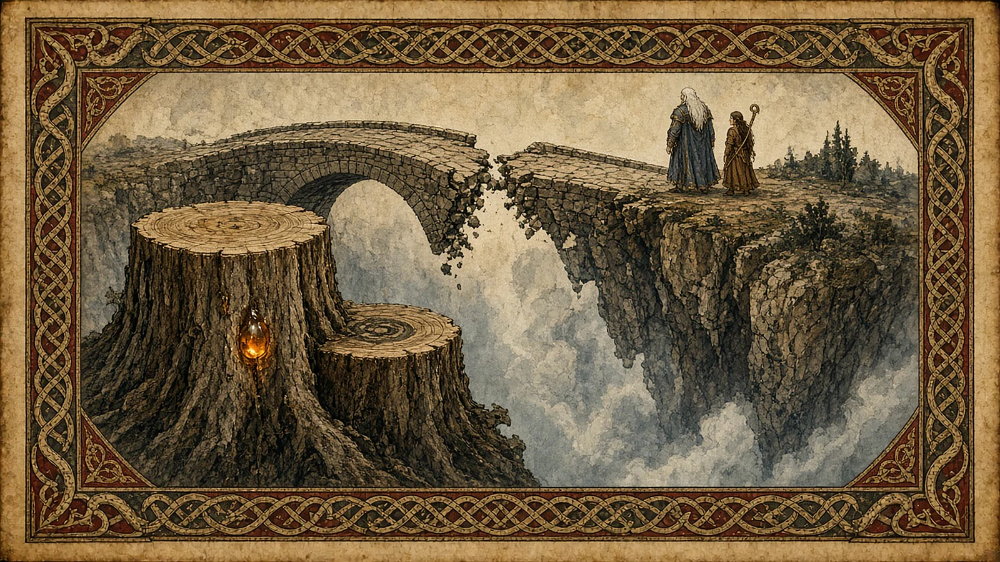
En el borde de la tierra que se iba estaban Snaebjorg y la Tañedora. La giganta, enorme, y la mujer de bronce a su lado, que no le llegaba a la cadera. No hicieron ningún gesto. No gritaron ni levantaron la mano. Miraban el puente y a la figura con el hacha, cada vez más pequeña, como se mira a alguien que ya se sabía que se iba a ir. Detrás de ellas, de las ramas cortadas solo quedaban tocones: muñones colosales de fresno, lisos como mesas por donde había pasado el hacha. Hoy los llamamos los Askstufar, «los tocones del fresno», y en los días claros se ven desde la playa, en el horizonte, como una montaña.
Odín dejó caer el hacha sin nombre al vacío. No la tiró, la dejó caer, y nadie sabe dónde fue a parar. Luego volvió a pasar la baranda, recogió su manto y subió por el puente hacia el árbol, sin volverse.
Yo me quedé dentro de la resina, pegada al tocón, en la tierra que se iba. Desde allí vi algo que él no vio. Sobre el vacío, entre las dos mitades del puente, caían plumas blancas.
Capítulo 6. La garza extiende las alas
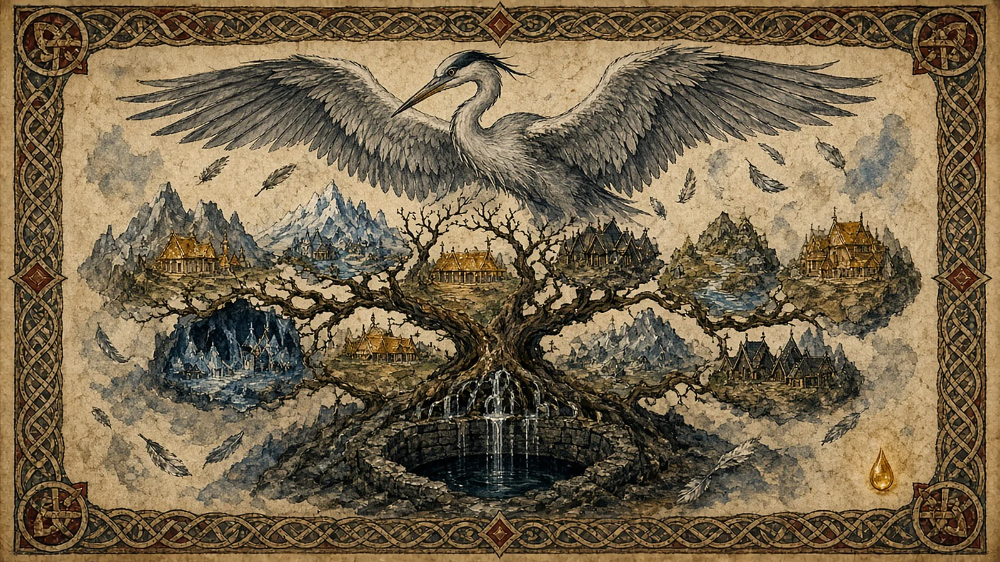
Hay un pájaro del que los escaldos hablan poco, y siempre en voz baja. Se llama ominnishegri, «la garza del olvido». Planea sobre los que beben demasiado y les roba el juicio, de modo que a la mañana siguiente no recuerdan lo que dijeron ni a quién se lo prometieron. Odín la conoce bien. Una vez, en casa de Gunnlod, la giganta que guardaba el hidromiel de la poesía, bebió tanto que la garza le ató con sus plumas y no recordó cómo había salido de allí. Desde entonces aconseja beber con medida. Él no siempre lo hace.
El olvido de Valgrund no podía ser como el de una borrachera, que se cura con agua y vergüenza. Tenía que ser total. Si quedaba en algún rincón de los nueve mundos una sola persona que se acordara, la cárcel tendría un hilo por el que deshacerse. Así que, cuando Odín llegó a lo alto del puente, la garza ya le estaba esperando, y no se posó en un solo bebedor.
Extendió las alas sobre los nueve mundos.
Eran tan grandes que su sombra cubrió Asgard y Midgard a la vez, los salones de los gigantes y las forjas de los enanos, los bosques de los elfos y las nieblas del norte. De sus plumas, grises y deshilachadas como la lana vieja, se desprendió un plumón que bajó despacio, igual que baja la primera nieve. Cayó en los salones de escudos y en los caseríos de pescadores, en las mesas de los reyes y en las cunas. A cada uno que le tocaba una pluma, se le olvidaba algo. Bajaba un poco la cabeza, como quien entra en una sala y no recuerda a qué venía, y luego seguía con lo suyo.
Se olvidó el décimo mundo. Se olvidó la batalla del vado. Se olvidó que los ríos de la canción habían sido algo más que ríos. Los gigantes olvidaron que habían luchado junto a un dios, y les sentó bien, porque no les gustaba recordarlo. Los einherjar que habían subido cantando por el puente se sentaron en el Valhalla y no supieron decir de dónde tenían aquellas heridas nuevas.
Solo una cosa se le escapó a la garza, y fue por lo pequeña que era. En una casa de Midgard, una mujer cantaba a su hijo para que se durmiera. Le cayó una pluma en el pelo y se le olvidó todo lo que había sabido de Valgrund, que tampoco era mucho. La canción no se le olvidó. Siguió cantando, porque la canción no hablaba de ninguna tierra, solo de once ríos con nombres bonitos. Y la garza, que roba recuerdos y no melodías, pasó de largo.
Lo que se olvida no desaparece. Eso no lo saben los que olvidan. Se va a alguna parte, como el agua de la lluvia, que no se pierde aunque deje de verse.
Cada raíz del fresno tiene su pozo. Al pie de una está el de Urd, donde tejen las nornas. Al pie de otra está el de Mímir, «el que recuerda», el guardián del saber, en cuyo fondo descansa el ojo que Odín dio a cambio de un trago. Valgrund también tenía el suyo, en el centro, entre las once celdas. Hasta entonces era un pozo pequeño, de agua clara, del que los Gleymdir sacaban agua para las ofrendas. Aquella noche se llenó.
Todo lo que los nueve mundos olvidaron de Valgrund bajó a él. Bajó por el aire, por el vacío y por los restos del puente, como bajan las aguas turbias tras una tormenta: los recuerdos de los gigantes, los de los dioses, los de los einherjar, los de la madre que cantaba. Se volvió agua gris, opaca, que no refleja nada. Desde entonces se llama Gleymskubrunn, «el pozo del olvido», y es el reverso del pozo de Mímir: allí se va a buscar memoria a cambio de un ojo, y aquí la memoria se pierde aunque no la des. Quien bebe de esa agua o cae en ella se olvida de cosas que sabía hacer con las manos.
Por eso los rastros de Valgrund solo están dentro de Valgrund. Todo lo que se olvidó vino a parar aquí.
Lo último que bajó fue el recuerdo de Odín.
No lo vi caer, pero lo vi llegar. Bajó por el vacío como una hoja seca, dando vueltas, más oscuro que los demás y más pesado, y se hundió en el pozo sin salpicar. Arriba, en lo alto del puente, el dios se dejó cubrir por la garza como ya se había dejado cubrir una vez en casa de Gunnlod, solo que esta vez a sabiendas. Cerró el único ojo. Cuando lo abrió, estaba en un puente que no llevaba a ninguna parte, con las manos manchadas de resina, y no supo por qué. Huginn se le posó en el hombro. Muninn tardó en volver, y cuando volvió no traía nada que contar. Odín, que siempre ha temido más por la memoria que por el pensamiento, se quedó mirándolo un momento. Luego se encogió de hombros, porque no es de los que se quedan mirando lo que no entienden, y volvió a Asgard. Por el camino se le secó la resina, y se la quitó de las manos sin pensar en ella.
En el fresno, donde habían estado las ramas del décimo mundo, había una herida abierta, astillada y llena de resina. La vi desde lejos, mientras Valgrund se alejaba, y la vi cerrarse.
Fue rápido, como todo lo que hace un árbol cuando nadie le mira. La corteza de los bordes se hinchó y empezó a avanzar desde los lados, gris y nueva, igual que avanza la piel sobre una quemadura. Se juntó en el centro y se alisó. La savia buscó otros caminos. Donde había estado la herida quedó una corteza igual que la de alrededor, sin marca, sin costura y sin ese labio levantado que dejan las cicatrices. Al poco, ni un leñador lo habría notado. El árbol había olvidado que allí había tenido una rama.
No te diré cómo está hoy el árbol, porque no lo sé, y quien te diga que lo sabe miente. Lo que te puedo decir es que, en aquella hora, el fresno se curó del todo, y que lo hizo tan bien que ya no quedaba nada de lo que acordarse.
Después vino la deriva.
Valgrund se alejó del árbol por el vacío, sin rama y sin rumbo. Durante los primeros años aún se veía el fresno a lo lejos, una mancha verde enorme en el cielo. Luego fue una mancha pequeña; luego, una estrella entre otras, y luego, nada.
El cielo de Valgrund cambió. En los nueve mundos, al sol y a la luna los persiguen dos lobos, Skol, «la burla», y Hati, «el que odia», y por eso el sol corre y los días pasan deprisa. A Valgrund no lo siguió ningún lobo. El sol se volvió perezoso y los días se alargaron, quietos, como tardes de verano que no se acaban. Las estrellas dejaron de formar las figuras que conocen los marineros. Y a veces, en su viaje, Valgrund atravesaba nubes de chispas sueltas del fuego de Muspelheim, las mismas con las que los dioses hicieron las estrellas. Caían sobre la tierra como granizo encendido y se apagaban humeando en la nieve.
Los que se quedaron fueron muriendo, cada uno a su manera.
Los Gleymdir vivieron algunas generaciones junto a sus aguas dormidas, vigilando los nudos, como habían jurado. Pero en una tierra sin camino no llega estaño y, sin estaño, no hay bronce nuevo. Fundieron lo viejo, y luego lo más viejo, y luego ya no había nada que fundir. Sus barcas se pudrieron en las playas, y nadie hizo otras. Sus nietos olvidaron para qué servían las trompas. Sus bisnietos olvidaron sus propios nombres, porque no había nadie fuera que se los recordara. Murieron, y los enterraron bajo túmulos que nadie iba a visitar. Los últimos se enterraron solos.
Los gigantes se fueron al anillo del frío, a vigilar la corriente que más temían, la que no dormía del todo. Montaron sus salones en el hielo y se sentaron a esperar. El frío que salía de aquella presa avanzaba un palmo cada invierno. Los alcanzó sentados. Allí siguen, dentro del hielo, con los ojos abiertos.
A los enanos los atrapó la luz. Cuando el hacha cortó las ramas, por la herida entró una claridad blanca, dura, que bajó por las galerías huecas hasta las cuevas del fondo. Era como el alba, y el alba convierte en piedra a los enanos que no se han puesto a cubierto. Muchos estaban abajo, en los túneles, apretando nudos. Quedaron de pie, con las herramientas en la mano, grises como las paredes.
Y las corrientes, dormidas, atadas y sin nadie en los nueve mundos que las recordara, empezaron a adelgazar. No de un año para otro. De un milenio para otro, como adelgaza un río en una sequía larga: el cauce sigue ahí, pero el agua baja cada vez con menos fuerza.
Lo que la tierra canta de aquellos tiempos lo canta en voz baja:
Lamento de la deriva
Bajo el brezo yacen los del bronce y la trompa;
en el glaciar, los gigantes con sus golpes guardados;
de piedra, los pequeños que el alba prendió.
Va la tierra a la deriva, sin dueño y sin día,
sin lobos que la sigan, sin lunas que la lloren.
Nadie la nombra. Nadie la nota.
Capítulo 7. Lo que se juró al filo del hacha
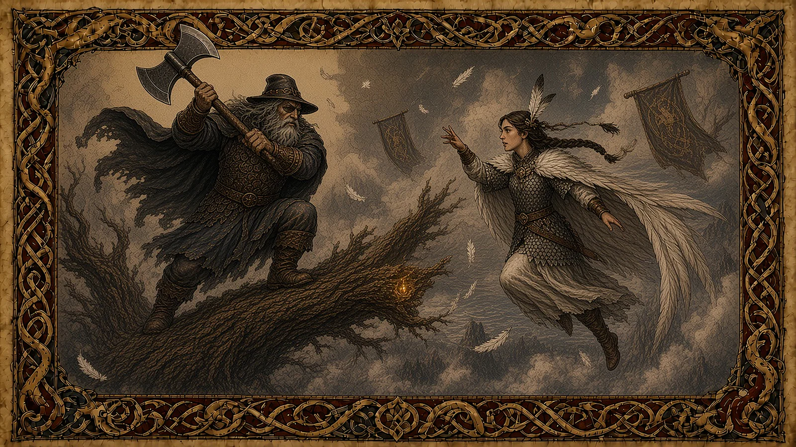
Te he contado el corte como lo contaría un cantar, si quedara alguno. Pero los cantares callan lo que no conviene, y yo te prometí la otra historia. Vuelve conmigo al vado, al amanecer del día del corte, antes de que Odín subiera por el puente.
Sobre el campo de batalla volaban las valquirias, «las que eligen a los caídos».
Son las doncellas de Odín. Cabalgan por el aire sobre los campos de Midgard cuando los hombres se matan, y de entre los muertos eligen a los mejores para llevarlos al Valhalla. Llevan mantos de plumas de cisne, y a veces, cuando se los quitan para bañarse en un lago, un hombre listo se los esconde y se casa con una de ellas, y le sale caro. Llevan lanza, casco y una mirada que pesa al muerto antes de que acabe de morir. Aquella mañana eran nueve, y llegaban tarde.
La batalla del vado había dejado muchos muertos buenos. Había Gleymdir que murieron con la trompa en la boca, einherjar que la corriente deshizo por segunda vez y gigantes que cayeron en el barro con la maza todavía en la mano. Las valquirias bajaron sobre ellos en un vuelo abierto, inclinadas, con los brazos extendidos, como bajan siempre a recoger lo que es suyo.
Y no se posaron. No pudieron. Algo en el aire de Valgrund, aquella mañana, ya les cerraba el paso: la tierra estaba a punto de dejar de pertenecer al árbol, y ellas son del árbol. Pasaron a un palmo de los muertos sin tocarlos, una vez y otra vez, y de sus mantos se desprendieron plumas blancas que cayeron sobre el pecho de los cuerpos que no podrían llevarse.
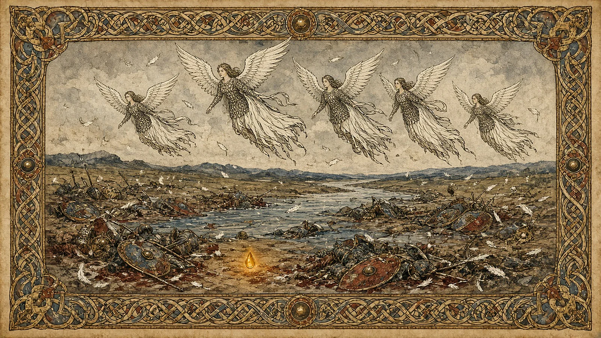
La que iba delante se llamaba Skuld. Su nombre quiere decir «lo que será», y es la más joven de las tres nornas, la que teje el porvenir. Es la única de las tejedoras que deja a veces el telar para cabalgar con las valquirias, y nadie sabe si es más norna que valquiria o al revés. En la lengua antigua, skuld quiere decir también «la deuda», lo que se debe y lo que vence. A ella no le parece casualidad. Hizo una seña a sus hermanas para que la esperaran sobre el vado, dio la vuelta y subió sola hacia el puente.
Llegó cuando Odín había dado ya el octavo golpe.
Skuld se puso delante de él, en el aire, a la altura del hacha. No se posó en la rama ni en el puente, porque los dos eran ya casi de Valgrund. Las otras ocho se habían quedado abajo, sobre el vado, tan lejos que desde la rama solo se veían sus plumas, sueltas en el viento.
—Hay muertos en el vado —dijo Skuld—. Muertos tuyos y muertos buenos. Venimos a elegirlos.
—No —dijo Odín.
No dijo más, y no hacía falta. Skuld lo entendió antes de que él terminara la palabra, porque lo que será no tiene secretos para ella. Si las valquirias se llevaban a un solo muerto de Valgrund al Valhalla, ese muerto se sentaría a la mesa con la herida de la batalla del vado. Alguien le preguntaría dónde se la hizo, y él no sabría contestar, y la pregunta quedaría en el aire, y en el árbol lo que se pregunta también tira. El olvido tenía que ser total. Los muertos del vado se quedarían en el vado, sin Valhalla, sin Helheim, que es el reino de los muertos, y sin ningún sitio, y harían de guardia de la cárcel con sus huesos.
—Nos pides que dejemos lo que es nuestro —dijo Skuld.
—Os pido más —dijo Odín—. Os pido que no elijáis a nadie de aquí, nunca. Que no pongáis el pie en esta tierra, nunca. Que olvidéis el camino como lo voy a olvidar yo. Y que calléis.
—¿Por qué no podemos poner el pie?
—Porque lo que pisa una valquiria lo ve Odín —dijo él—. Vuestros ojos son los míos en los campos. Si una de vosotras pisa esta tierra, yo la veré. Y no puedo ver lo que tengo que olvidar.
Skuld se quedó callada un rato. Dentro de la resina, pegada al tocón, yo oía cada palabra.
—Lo haremos —dijo Skuld al fin—. Pero todo tiene un precio. Tú mejor que nadie lo sabes, que pagaste un ojo por un trago.
Odín esperó. El hacha le pesaba en las manos.
—Los nudos se aflojan —siguió ella—. Tú lo sabes y yo lo he visto. Con el olvido se aflojarán más despacio, pero las corrientes no estarán atadas para siempre: solo se irán quedando flacas. Llegará un día en que estén tan flacas que unos mortales puedan atarlas del todo. Ese día, alguien tendrá que venir a terminar lo que dejas a medias. Nosotras no podremos venir, porque nos lo prohíbes. Pero podremos mandar a los nuestros. Muertos elegidos por nosotras, que nunca pasarán por tu salón.
—¿Y por qué querríais hacer eso?
—Por el precio —dijo Skuld—. Cuando los Once estén atados y la tierra limpia, el décimo reino será nuestro. No tuyo, ni de los dioses, ni del árbol. Nuestro.
Abajo, sobre el vado, las otras ocho lo oyeron, aunque estaban lejos, porque lo que dice una valquiria en el aire lo oyen todas sus hermanas. Ninguna se movió. La más alta cerró los ojos.
Odín pensó. Le vi pensar desde la resina, y es algo que da miedo ver. Pensó que una tierra cortada del árbol, sin hebra y sin camino, no valía nada para él. Pensó que las valquirias eran suyas y que lo que es de ellas es suyo. Y pensó, sobre todo, lo que hacía que todo lo demás diera igual: dentro de un momento iba a olvidarlo todo. Olvidaría la tierra, el trato y el precio. No se puede lamentar lo que se ha prometido si no se recuerda haberlo prometido.
—Decidlo —dijo— para que valga.
Skuld extendió la mano con la palma hacia abajo, a un palmo del filo del hacha, sin tocarlo. En la otra mano llevaba un huso de hilar sin hilo. Y dijo los términos, y abajo, sobre el vado, las otras ocho los repitieron con ella, verso a verso, de modo que el pacto se dijo nueve veces a la vez, aunque junto al hacha solo se oyó una voz:
El cantar de los términos
Ni un muerto mudaremos de este mundo cortado,
jamás posaremos pie en su playa;
olvidaremos el camino, callaremos el cuento
y aguardaremos el agua hasta que adelgace.
Cuando la corriente la quiebren los caídos,
mandaremos muertos a amansar la marea,
y el reino sin rama será refugio nuestro,
lejos del lobo, libre del lazo.
—Lejos del lobo —repitió Odín, despacio—. Libre del lazo.
Lo oyó. Lo entendió. El lobo es el que se lo comerá a él el último día, y el lazo es el tejido de las nornas. Un reino fuera del árbol queda fuera del tejido, y lo que está fuera del tejido no tiene que caer cuando caiga el árbol. Las valquirias no le estaban pidiendo una tierra. Le estaban pidiendo una salida.
Asintió de todos modos. Ya te he dicho que iba a olvidarlo.
Odín dio el noveno golpe. Skuld retiró la mano en el último momento, y el filo pasó por donde había estado su palma.
Skuld voló a reunirse con sus hermanas, y desde el aire las nueve vieron partirse el puente como una rama seca y a la tierra empezar a irse. Vieron alejarse los once anillos con sus aguas dormidas, sus muertos y sus tocones, y los miraron mucho rato, que es algo que no hacen nunca con nada que dejen atrás. Luego dieron la vuelta y volaron hacia el Valhalla, y por el camino se les fue olvidando la ruta, como habían jurado. Al llegar ya no sabían por dónde habían venido.
Lo que no olvidaron fueron los términos. Se los llevaron dentro, en un cantar que no se canta en ningún salón y que no se ha escrito en ninguna piedra, un cantar que solo oyen ellas, igual que se oye la propia sangre en los oídos cuando todo calla. No recordaban el camino ni la tierra. Recordaban que se les debía algo, y que el día de cobrarlo llegaría.
Las plumas que viste caer en el vacío al final del corte eran suyas. Se desprendieron de los mantos cuando dieron la vuelta, y cayeron hacia la tierra que se iba sin llegar a tocarla. Algunas siguen cayendo.
Ahora ya sabes lo que se habló en aquella pausa antes del noveno golpe. Y sabes algo que no sabe nadie más en los nueve mundos, ni siquiera el que lo juró.
Capítulo 8. El salón que no está en el árbol
En el Valhalla, las valquirias sirven el hidromiel.
Es su otro oficio, el que no sale en los cantares de batalla. Cuando han elegido a los muertos en el campo y los han llevado al salón de los caídos, se quitan el casco, cogen los cuernos y sirven. Sirven a los einherjar que han peleado todo el día en el patio y se sientan a cenar con las heridas cerradas. Sirven a Odín, que no come y solo bebe. Sirven noche tras noche, siglo tras siglo, en un salón con tantas puertas que nadie las ha contado dos veces con el mismo resultado.
Gondul, cuyo nombre quiere decir «la de la vara», porque en su día también supo de hechizos, era la más alta de las nueve que estuvieron en el puente, la que cerró los ojos cuando Skuld dijo el precio. Llevaba sirviendo desde antes de que hubiera reyes en Midgard. Y mientras servía, contaba.
No contaba cuernos ni guerreros. Contaba cabezas. Porque las valquirias saben, como lo sabe la vidente a la que Odín despertó de su tumba para que se lo contara, cómo acaba todo esto. El último día, los einherjar saldrán por todas esas puertas a la vez, de cientos en cientos, a la batalla final. El lobo se soltará y se tragará a Odín. El fuego del sur subirá hasta el cielo, y los mundos se hundirán en el mar. Después, dice la vidente, la tierra volverá a salir del agua, verde y limpia, y algunos de los dioses volverán a sentarse en la hierba a jugar con piezas de oro.
De las valquirias no dice nada. Ni que mueran ni que vuelvan. No aparecen en el mundo nuevo. Gondul se había pasado muchas noches pensando en eso mientras llenaba cuernos.
Canción de las que sirven
Servimos el sorbo a los que serán segados,
cuernos colmados para los que caerán;
lo vimos en la vidente: vendrá el lobo,
y nadie nos nombra en el nuevo mundo.
Ellas, que eligen a todos, nunca habían sido elegidas para salvarse.
Skuld, en cambio, no servía. Pasaba el tiempo con sus hermanas, las otras nornas, junto al pozo de Urd, al pie del fresno, tejiendo lo que será.
Había olvidado el camino a Valgrund, como juró. Lo había olvidado de verdad: si le hubieras preguntado en qué dirección estaba la tierra cortada, no habría sabido señalarla. Pero el pacto decía que olvidaran el camino que había quedado atrás, y Skuld no teje lo que fue: teje lo que será. Y en lo que será, un día, empezó a aparecer una tierra.
Al principio era solo un nudo raro en el tejido, un sitio donde la trama se fruncía alrededor de algo que no tenía hebra. Luego, con los siglos, el frunce se fue acercando al borde de la tela, al lugar donde se teje el presente. Skuld lo miró mucho tiempo sin tocarlo. Un día pasó el dedo por encima y notó, debajo del hilo, el frío de un agua muy antigua y muy cansada.
El pasado lo había olvidado. El porvenir, no. El porvenir no tenía motivo para olvidar nada, porque todavía no había pasado. Así fue como encontraron otra vez el camino: no recordándolo, sino viéndolo venir.
Desde entonces, de vez en cuando, algunas de ellas iban a mirar.
Hay un sitio en el borde del cielo donde el aire se vuelve tan fino que ya no aguanta el peso de un caballo. Las valquirias dejaban allí sus monturas y se sentaban en el saliente de nube helada, con los mantos recogidos, y miraban hacia abajo. Abajo, muy lejos, flotando en el vacío negro, pasaba Valgrund a la deriva: un disco pequeño de once anillos de islas, con los fosos brillando apenas entre ellas, como hilos de plata vieja.
Cada vez que iban, los fosos brillaban menos. Las corrientes adelgazaban, como había dicho Skuld en el puente. Cada vez que iban, el cantar de los términos les sonaba un poco más fuerte en los oídos, como suena más fuerte la sangre cuando uno se acerca a lo que teme.
Una vez fueron cinco. Se sentaron en el borde y estuvieron mucho rato sin hablar. La más joven, que no había estado en el puente y solo conocía los términos por el cantar, se levantó sin decir nada y sacó un pie por encima del borde, hacia el vacío, hacia la tierra que pasaba. No llegó a apoyarlo en nada. Gondul le había cogido el tobillo.
—Si lo pisas —le dijo—, él lo ve.
La joven recogió el pie y se volvió a sentar. Nadie dijo nada más aquella noche.
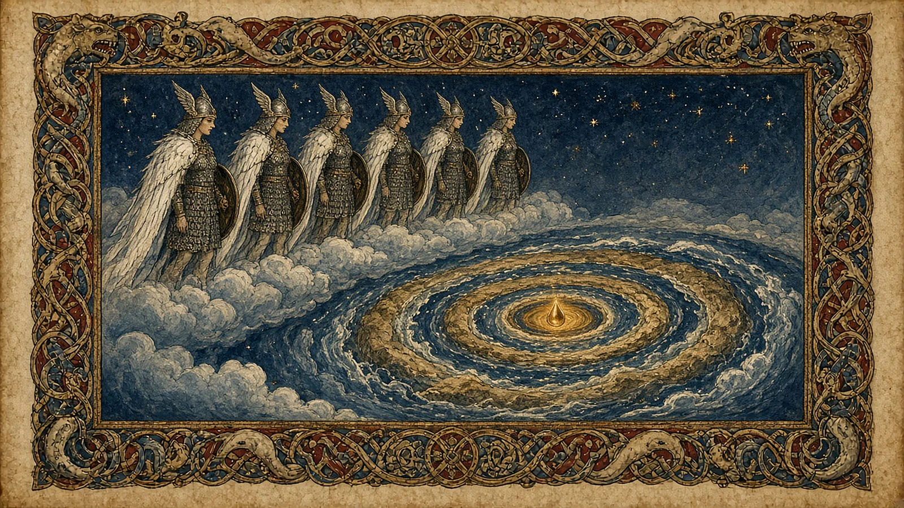
El consejo lo celebraron en un lugar sin nombre, entre las raíces del fresno, donde ni los cuervos de Odín llegan, porque allí no hay nada que contar. Estaban todas las que oyen el cantar.
—El agua está flaca —dijo Skuld—. No lo bastante todavía, pero se acerca. Cuando llegue el momento, mandaremos a los caídos.
—¿A cuáles? —preguntó una.
—A los que mueran en batalla cuando llegue el momento, como siempre. Solo que no los traeremos aquí. Los dejaremos en la orilla de allí.
—Y nunca vendrán al Valhalla —dijo Gondul.
—Nunca. Serán el pueblo del décimo reino. Los primeros que vivan en él después de los Gleymdir. Nuestros.
Gondul pensó en las cabezas que contaba mientras servía, en los einherjar saliendo por las puertas hacia el lobo. Pensó que, de todo lo que habían hecho las valquirias en su larga vida, aquello no era lo peor. A los que llevaran a Valgrund no se los comería el último día. Tendrían una tierra difícil y dura, pero suya, o casi.
—¿Qué les diremos? —preguntó.
Ahí estaba la dificultad, y todas la sabían. Si a un guerrero le dices «te llevamos a otro mundo para que lo limpies, y cuando esté limpio será de nosotras y tú vivirás en él para siempre, a salvo del fin del mundo», el guerrero hace dos preguntas. La primera es de quién será la casa. La segunda, qué pasa si no quiere. Y un guerrero que hace preguntas antes de luchar lucha mal.
—Les diremos la verdad —dijo Skuld.
Las otras la miraron.
—Una parte —añadió—. Les diremos que hay una tierra tomada por los Once, que hay muertos antiguos que esperan, que alguien tiene que atar lo que quedó suelto y liberar a los que no pudieron ir a ninguna parte. Les diremos que vienen a limpiar. Es cierto. Vienen a eso.
—Y les diremos que después los llevaremos a casa —dijo Gondul, despacio.
—También es cierto —dijo Skuld—. Solo que no les diremos qué casa.
Nadie protestó. La más joven, la del pie, miraba al suelo. Gondul se quedó con las manos en el regazo, como cuando sostiene un cuerno vacío.
No te estoy contando que las valquirias sean malvadas. No lo son, o no más que cualquiera que ha visto su propio final y ha encontrado una puerta. Te estoy contando lo que te van a decir y lo que no, para que, cuando te lo digan, sepas escucharlo entero.
Capítulo 9. La cárcel del olvido, I: sal, sueño, rencor y silencio
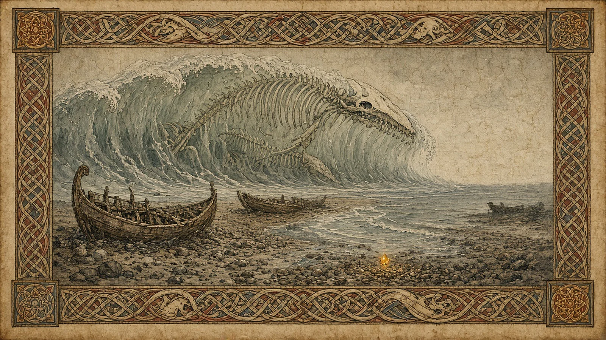
Ahora te llevaré por la cárcel tal como es hoy, después de milenios de deriva. Yo la he recorrido entera, aunque no lo parezca: un carcelero gleymdir me arrancó del tocón y me llevó colgada al cuello, y después de él me han llevado muertos, gigantes, ríos y urracas, y me han perdido y encontrado más veces de las que sé contar. Iremos de fuera hacia dentro, como irás tú si llegas lejos, y te contaré lo que hay en cada anillo: quién duerme en él, qué hace su sueño con la tierra y qué agua lo rodea.
Antes, recuerda la ley, porque no ha cambiado:
La ley de la atadura
Quiebra la carne que la corriente se cose,
nombra el nombre que nació con ella,
anuda el agua y que el agua se aquiete.
Y recuerda tres cosas más.
La primera: los presos no mueren. Se rompen, se nombran y se anudan, y entonces duermen. Pero los nudos se aflojan, como vio Odín, y con el tiempo cada preso se revuelve en su sueño y luego despierta. Atarlo una vez no es atarlo para siempre. Lo que haces en esta tierra, otro tendrá que volver a hacerlo después de ti, y quizá tú mismo.
La segunda: cada foso es la corriente del preso de fuera, y solo se aparta para quien lleva su nudo. La primera vez que lo cruzas a bordo, con el nudo en la mano, el agua se lo bebe y te enseña el paso: tú aprendes el vado, la franja de agua mansa que la corriente abre para ti cuando llevas el timón. Sin el vado, la corriente devuelve tu barca a la orilla. Eso ya no te lo quita nadie, ni siquiera la muerte. Pero el nudo es una cosa, y las cosas se caen, se roban y se venden.
La tercera: solo puede atar quien conoce los nombres, y los nombres solo se aprenden fuera, en los nueve mundos, en una canción de cuna. Los muertos de aquí los olvidaron hace mucho y las valquirias no pueden pisar esta tierra. Por eso hacéis falta vosotros.
El anillo de fuera es Valfjara, «la playa de los caídos», una isla larga y curva como una hoz. Se llama así por los barcos.
La arena es gris y está llena de barcos funerarios varados, ladeados, con las bordas comidas por la sal y los escudos todavía clavados en los costados. Algunos tienen la forma de los barcos de tu tiempo, con la proa alta y la quilla fina. Otros son tan viejos que tienen la forma de los barcos que grababan los Gleymdir en las rocas, con muchos remos y un cisne en la proa, y nadie sabe quién los trajo. Hacia fuera, más allá de la rompiente, no hay otra orilla: el mar se pierde en una niebla blanca y, detrás de la niebla, en el vacío. Hay focas en las rocas, zorros en las dunas y cangrejos en las pozas. A veces, entre las algas, se deja ver el marbendil, «el hombre del mar», el tritón de las sagas: si consigues atraparlo, te dirá una verdad, pero solo la mitad.
La marea sube y baja dos veces al día, y cuando sube inunda la playa y arrastra lo que hay en el suelo. Esa marea es la respiración del preso de este anillo. Se llama Brimgnyr, «el bramido de la rompiente», y su forma es la ola que viste en la batalla del vado: una ola altísima que no rompe nunca, con huesos de ballena dentro, que se alza al fondo de la playa como un acantilado de agua. Hoy está más baja que entonces. Se le ven mejor los huesos.
Se le vence como lo venció la Tañedora. Con la marea alta no hay manera de romperle la forma. Con la marea baja, sí. Y cuando la forma se rompe, no se le nombra en el estruendo, sino en la calma que viene después: cuando una ola se retira más lejos que las otras y el mar se queda quieto, pensando, durante varias respiraciones. No hay prisa. El mar da tiempo para decir el nombre despacio y entero, como lo dijo ella. La atadura es una cuerda de fibra y algas trenzadas, y el nudo que sale de ella es de sal dura y ruge si te lo acercas al oído.
Estrofa de la primera celda
Brama la rompiente, la ballena en su vientre,
ola que no osa hundirse en la orilla;
resuena su nombre en el rugido del nudo:
cuando calle la costa, cálmala con su nombre.
El nudo de sal abre el primer foso: el estrecho que ruge, donde la corriente de la ola dormida corre en círculo alrededor del segundo anillo con un ruido que no te deja pensar. Se cruza en barca, o no se cruza.
En la otra orilla está Lyngmor, «el páramo de brezo»: tierra abierta, viento, turberas negras, uros, lobos y víboras. Aquí la noche es peligrosa por otro motivo. Si duermes al raso, se te sientan en el pecho las maras, «las que aplastan al que duerme», delgadas como vaho, y por la mañana te levantas como si hubieras cargado piedras toda la noche. Algunos no se levantan.
El preso de Lyngmor se llama Draumjafi, «el que da los sueños». Su forma no da miedo. Es un cuerpo enorme hundido a medias en la turbera más honda, entero, sin una herida, de piel oscura y curtida como el cuero viejo, con los ojos cerrados y la cara tranquila de quien duerme bien. No se mueve. No hace falta. Su forma de guerra no está en la turbera, sino en el sueño.
Para romperla hay que tumbarse junto a él en la turba y dormir. Dentro del sueño se lucha y, dentro del sueño, se dice el nombre. La atadura se le echa al despertar. Pero mientras duermes, tu cuerpo se queda tumbado en la turbera, indefenso, al alcance de cualquiera que pase con un cuchillo y ganas de quedarse con tus cosas. Nadie te vela si no has pagado a alguien para que lo haga, y aun así nunca se sabe.
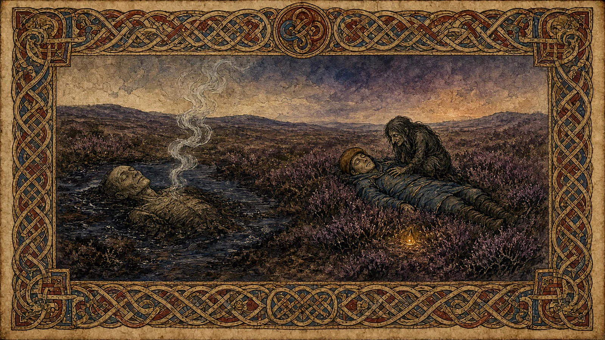
Estrofa de la segunda celda
Duerme en la turba el dador de los sueños,
sin sangre, sin sed, con los sueños sellados;
temible en lo tibio, te tiende la mano:
vela tu cuerpo, que vienen a verlo.
Su nudo es de turba y está tibio, como alguien que duerme.
El nudo de turba abre el segundo foso: el agua que duerme, un brazo de agua negra de turba, quieta como un charco, donde quien rema sin el nudo se adormece sobre el remo y se hunde con su barca, despacio, sonriendo.
En la otra orilla está Haugaholt, «los cerros de los túmulos». Aquí enterraron los Gleymdir a sus muertos, y aquí se quedaron los muertos del vado que las valquirias no pudieron llevarse. Es un archipiélago de cerros que salen del agua, cada uno con su túmulo redondo, y en los islotes mayores se ven las canteras de cobre de la gente de bronce, que todavía tienen las vetas verdes al aire. Entre los túmulos hay también barcos de piedra: tumbas en forma de barco, hechas con piedras hincadas en la hierba, porque los Gleymdir eran gente de barca y querían seguir navegando después de muertos. Hay bronce para quien sepa buscarlo, en el cobre de las canteras y en el ajuar de los muertos. Los muertos no lo regalan.
De noche, los túmulos se abren. Salen los haugbuar, «los que habitan el túmulo», cada uno con su nombre olvidado y su espada, a defender lo que es suyo. Salen también los afturgongur, «los que vuelven», los muertos que no se resignan, a ajustar cuentas que ya nadie recuerda.
El preso de este anillo se llama Heiftvald, «el señor del odio a muerte». Su forma es la loba de la batalla: una loba hecha de vetas rojizas y de rencores, que habla con la voz de todos los que te han matado. Se hace más fuerte con los rencores de quienes la combaten. Si has muerto hace poco a manos de otro y aún le guardas la cuenta, ella lo nota y se alimenta de eso. Para atarla, cada uno de los que la atan tiene que renunciar a una venganza. No a una cualquiera: a una que de verdad pensara cobrarse.
Estrofa de la tercera celda
Loba de lutos con la lengua de los tuyos,
habla con la voz de quien te ha vencido;
rencor la rellena, rabia la remienda:
suelta tu venganza si quieres que se sujete.
Su nudo es un cordón rojo oscuro, del color de la sangre seca.
El nudo de sangre abre el tercer foso: el cerco de túmulos, una corriente roja que corre entre arrecifes. En cada arrecife hay un túmulo y un muerto de pie, hombro con hombro con el del arrecife vecino, que no deja pasar a ningún forastero. A quien lo intenta sin el nudo, los ahogados le agarran la borda.
En la otra orilla está Ymork, «la marca de los tejos»: una isla grande cubierta por un bosque viejo, oscuro y húmedo, donde los arroyos corren rojos porque arrastran hierro en el fondo. Ahí aprenderás a sacar hierro, si no lo sabes ya. Hay osos y linces. Hay elfos, los alfar de la lengua antigua, que no son ni buenos ni malos y a los que conviene honrar antes de que te honren ellos a ti. Y hay tunridur, «las que cabalgan las cercas», que vienen de noche a las casas y se sientan en los tejados.
Y hay silencio. En Ymork el sonido no viaja: no oyes los gritos de la sala de al lado, ni los pasos de quien se te acerca, ni tu propia voz cuando gritas pidiendo ayuda. Es el sueño del preso, que se llama Thagnarvord, «el guardián del silencio». Su forma es un claro del bosque donde no se oye ni la propia sangre. Se entra en él como se entra en el agua fría: de golpe, y sin respiración.
Allí no se puede decir el nombre, porque el silencio se traga las palabras antes de que salgan de la boca. Hay que grabarlo en runas, con un cuchillo, sobre la forma rota, letra a letra. Los Gleymdir lo descubrieron tarde y lo pagaron caro. Tú ya lo sabes.
Estrofa de la cuarta celda
Calla el claro, calla la sangre,
sereno y sin son, sombra de tejo;
no sirve la boca donde el bosque no oye:
graba en la grieta lo que la garganta no puede.
Su nudo es una fibra de tejo que no hace ningún ruido, ni siquiera al romperse.
Capítulo 10. La cárcel del olvido, II: eco, podredumbre, oscuridad y escarcha
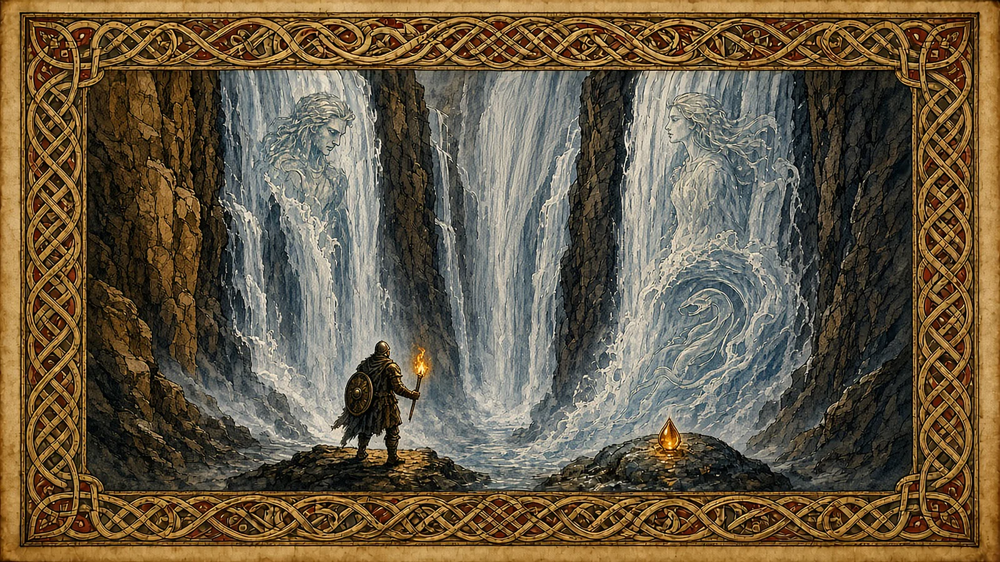
El nudo mudo abre el cuarto foso: el agua callada, un brazo de mar quieto y cubierto de niebla, tan silencioso que nadie se orienta en él sin el nudo, porque no se oye la rompiente que te diría dónde están las rocas.
En la otra orilla, la tierra se rompe en pedazos. Es Forsgliuf, «la garganta de las cascadas»: islas de roca partidas por cañones por donde entra el mar, con cascadas heladas a medias que caen de los acantilados al agua y caminos de cornisa colgados de las paredes. Arriba planean las águilas. Abajo saltan los salmones y juegan las nutrias. En los acantilados viven los bergbuar, «los que habitan la roca», gigantes de piedra que no bajan de sus cornisas y no quieren que nadie suba. Aquí se hace el acero: el hierro de los tejos, templado en el agua helada de las cascadas, sale más duro que en ninguna otra parte.
Y aquí el eco miente. Gritas tu nombre en la garganta y te vuelve otro. Preguntas por el camino y la roca te contesta con una voz que se parece a la de tu compañero, pero diciendo otra cosa. Siempre se nota que es eco, porque suena a roca mojada. Lo difícil es acordarse de ello cuando tienes miedo.
El preso de este anillo se llama Talsmid, «el forjador de engaños». No tiene una forma, sino dos. En el polvo de agua de las cascadas se alzan dos figuras: el busto de un hombre, del pecho para arriba, y una mujer entera con una serpiente enroscada a los pies. Solo una es la verdadera. La otra es eco hecho cuerpo. Para encontrar la buena hay que fijarse en lo que dicen y en cómo lo dicen, porque la verdadera es la única cuyo contorno no tiembla. Él lo sabe, y por eso las hace hablar tanto a las dos.
En su anillo, además, los caídos recuerdan desordenada la canción de cuna. Los once ríos se les cambian de sitio en la boca y la loba se les va al principio. Si llegas hasta aquí, repasa la canción antes de cruzar, despacio, en voz alta, mientras todavía la sabes.
Estrofa de la quinta celda
Forja figuras el forjador de fraudes,
dos cuerpos, dos caras y una sola cierta;
recita revuelto el romance de los ríos:
escucha el eco, y que el eco no te engañe.
Su nudo parece otro cada vez que lo miras, pero siempre es el mismo.
El nudo doble abre el quinto foso: los canales que mienten, pasos de agua entre farallones que cambian según quién los navegue y que llevan a las rocas a quien no tiene el nudo.
En la otra orilla salen del mar las ramas. Te acordarás del séptimo golpe del hacha, el que vació las venas. Las ramas del fresno atravesaban Valgrund por dentro, y al cortarlas se quedaron huecas y muertas. Hoy asoman del agua como lomos de ballena, tan grandes que dentro caben salas, y son Rotgong, «los pasajes de raíz»: galerías enormes de madera petrificada, con vetas que parecen latir cuando las tocas, aunque ya no late nada. En sus paredes hay plata nativa y esteatita, la piedra blanda que sirve para hacer moldes y crisoles. Por ellas reptan serpientes que ya no tienen nombre, porque se lo quitó el olvido, y caminan draugar, «los muertos sin descanso», carceleros gleymdir que murieron de guardia y no se han enterado.
En Rotgong todo se pudre antes de tiempo. La madera no prende, el pan se llena de moho en una noche y el fuego cuesta tanto de encender como de mantener. Es el sueño de Funandi, «el que pudre». Su forma es una corriente lenta de madera deshecha, una papilla parda que avanza por las galerías, ablandando todo lo que toca. Cuando luchas contra él, se te pudre el equipo: el mango del hacha se ablanda, el cuero del escudo se agrieta y la espada se cubre de herrumbre. Solo aguanta lo que lleva plata. La atadura que se le echa es como la que forjó Hamar: una cadena de acero con hilos de plata embutidos.
Estrofa de la sexta celda
Pudre la piedra, la pica y la plancha,
rápida en la ruina, reina de la raíz;
solo la plata sale sana de su saliva:
ata con acero y argénteo el amarre.
Su nudo es un trozo de raíz podrida que no se deshace nunca.
El nudo de raíz abre el sexto foso: el sumidero, un agua que corre cuesta abajo, deprisa, y se mete por una boca de roca en la isla hueca que hay detrás. A quien no lleva el nudo, lo estrella contra la roca.
Dentro de esa isla están las cuevas. Se llaman Myrkhelar, «las cuevas oscuras», y en ellas no hay luz, ni la ha habido nunca, salvo una vez. Las salas se recorren a ciegas, por el tacto de la roca, el olor del agua y el eco de las gotas. Hay peces ciegos en los lagos y, en el aire, las myrkridur, «las que cabalgan en la oscuridad», que te rozan la nuca al pasar. En las paredes crecen el cristal de roca, claro como el agua, y los granates, rojos como brasas apagadas.
Y en el fondo, de pie, están los enanos. Son los que se quedaron apretando nudos cuando el hacha abrió la herida y la luz entró por ella como un alba. Siguen allí, de piedra, con los martillos en la mano y las caras vueltas hacia arriba, hacia una luz que ya no está. Si pasas los dedos por sus caras en la oscuridad, encontrarás una con la boca muy apretada, como cosida por dentro. No sé si es él. Me gusta pensar que sí.
El preso de este anillo se llama Nidamyrk, «la oscuridad cerrada». Su forma es la propia oscuridad, que se espesa hasta que pesa como el agua y se traga las antorchas una a una. No se la puede ver, así que no se la puede romper a oscuras. Hace falta una luz que dure: linternas hechas con el cristal de estas mismas cuevas, que no se apagan con su aliento. Y se la ata a la luz, nunca a oscuras.
Estrofa de la séptima celda
Negra y ancha, noche sin nadie,
se espesa en la sima y se sorbe la llama;
lleva luz que dure y que la lumbre no ceda:
a la luz se la ata, no a la lumbre que tiembla.
Su nudo es negro y se bebe la luz de lo que tiene cerca.
El nudo negro abre el séptimo foso: la boca sin luz. Por ella sale el agua de las cuevas a un mar ancho y negro, bajo una noche que no acaba, que ninguna antorcha alumbra; solo una luz de cristal.
En la otra orilla está el hielo. Es Hrimgard, «el cerco de escarcha»: una isla grande de glaciares azules, llanuras blancas, ventiscas que esconden los caminos y un frío que mata en una noche a quien no va abrigado. Hay osos blancos, renos y morsas, cuyo marfil es lo mejor que vas a encontrar para tallar. Y hay unas piedras claras, las piedras de sol, que te dicen dónde está el sol aunque la ventisca lo tape. Los gigantes cuentan que no siempre señalan al sol. A veces señalan hacia el sitio donde estaba el árbol.
Bajo el hielo están los salones de los gigantes que vinieron a vigilar a este preso, con las columnas rotas y las mesas puestas. Dentro del hielo están los gigantes, de escarcha y de montaña, sentados o de pie, con las armas a mano, como los dejó el frío. Tienen los ojos abiertos. Algunos todavía hablan, si te acercas lo bastante, con voces que no mueven los labios.
Allí la encontré. Snaebjorg está en el salón más grande, junto a la puerta, con la mano en la maza y la cara vuelta hacia fuera, como quien espera visita. Fue ella quien me contó la batalla del vado, desde dentro del hielo, sin prisa, porque ya no tiene ninguna. Me dijo que no se arrepiente. Me dijo también que, si algún día pasa por allí un dios de un solo ojo, no le diga que sigue esperando.
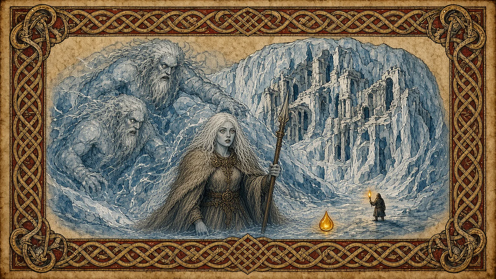
El preso de Hrimgard se llama Kaldrifjad, «el de las costillas frías», que en la lengua antigua quiere decir «el despiadado». Su forma es un cuerpo de hielo más grande que los gigantes, con el pecho de costillas transparentes y los ojos abiertos. Está despierto, pero no se mueve. No le hace falta. Lo que ataca es el frío que sale de él y que avanza por el suelo como una marea blanca.
Se le rompe con calor. Hay que llevar fuego a través del glaciar, en una cesta de hierro, cubriéndolo con el cuerpo de la ventisca, y mantenerlo encendido mientras dura el combate. Si el fuego se apaga, se acabó, y te quedarás en el hielo con los demás, mirando la puerta.
Estrofa de la octava celda
Costillas de cristal, corazón de cierzo,
ventisca que vela con los vivos ojos;
frío que avanza, fuego que se apaga:
si falla la fogata, fallaréis con ella.
Su nudo es de escarcha, y no se derrite aunque lo eches al fuego.
Capítulo 11. La cárcel del olvido, III: brasa, hambre y un viento sin dueño
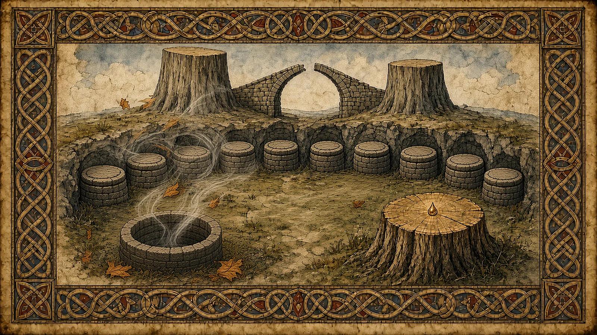
El nudo de escarcha abre el octavo foso: el mar de ventisca, hielo a la deriva y una pared de nieve que corre en círculo sobre el agua, y que solo se deja cruzar con el nudo en el puño.
En la otra orilla, la nieve humea. Es Hverafold, «la tierra de las fuentes hirvientes»: islas de llanos blancos agujereados por pozas que hierven, fumarolas que silban y géiseres que saltan sin avisar. El suelo quema en unos sitios y en otros se hunde. A ciertas horas, los vapores de azufre bajan por las hondonadas y matan a quien está allí. Tienen horario, como las mareas, y quien lo aprende vive. Aquí caen, más que en ninguna otra parte, las chispas de Muspelheim que Valgrund atraviesa en su deriva. Se enfrían en la nieve y dejan un metal negro y durísimo que se llama neistajarn, «hierro de chispa».
En este anillo viven los brennumenn, «los incendiarios»: caídos de otros tiempos que juraron servir al preso a cambio de sus dones y que van de noche quemando casas con la gente dentro. Son caídos como tú. Recuérdalo cuando los veas.
El preso se llama Glaedir, «el que aviva las brasas». Su forma es el relámpago de la batalla del vado, que sigue sin terminar de caer. Cuelga sobre las fuentes, crujiendo, y todo lo que hay debajo se calienta. No se le puede romper con fuego, porque es fuego, ni con hielo, porque lo hierve. Solo lo apaga el agua de otra corriente: el agua que resuena, traída desde el estrecho de la costa, nueve anillos atrás, en un odre que no se puede romper por el camino. Y tiene otra regla, más antigua: no puede nombrarlo nadie que haya roto un juramento. Si has jurado en falso, deja que lo nombre otro.
Estrofa de la novena celda
Luz que no llega, lanza que no cae,
brasa en la bruma, bramido de azufre;
el agua que resuena apaga su ardor:
no lo nombre el perjuro, que su palabra no pesa.
Su nudo es una brasa que no tiene llama y no se enfría.
El nudo de brasa abre el noveno foso: el agua que hierve, un brazo de mar que humea y burbujea bajo una cortina de vapor, y que cuece a quien entra en él sin el nudo.
En la otra orilla no hay nada. Es Audnir, «los yermos»: una isla grande de arena negra y piedra desnuda, sin un árbol, sin agua dulce y casi sin caza. El hambre corre aquí el doble de deprisa, y la sed, más. Por el yermo vagan los skogarmenn, «los hombres del bosque», que es como llamaban las sagas a los proscritos, aunque aquí no haya bosque: caídos flacos, de ojos grandes, que se comen a los suyos cuando no encuentran otra cosa. Les siguen carroñeros y lobos del yermo, que esperan.
Y hay oro. Hay mucho oro, en lajas, en arroyos secos y en montones que nadie ha amontonado. El oro es el cebo del preso, que se llama Sultargest, «el huésped del hambre». Su forma es una boca que ocupa todo el horizonte. La línea del cielo se curva hacia arriba y hacia abajo, como unos labios entreabiertos, y las piedras del borde son sus dientes. Atrae a los vivos y a los muertos con el oro, y se los come con el hambre.
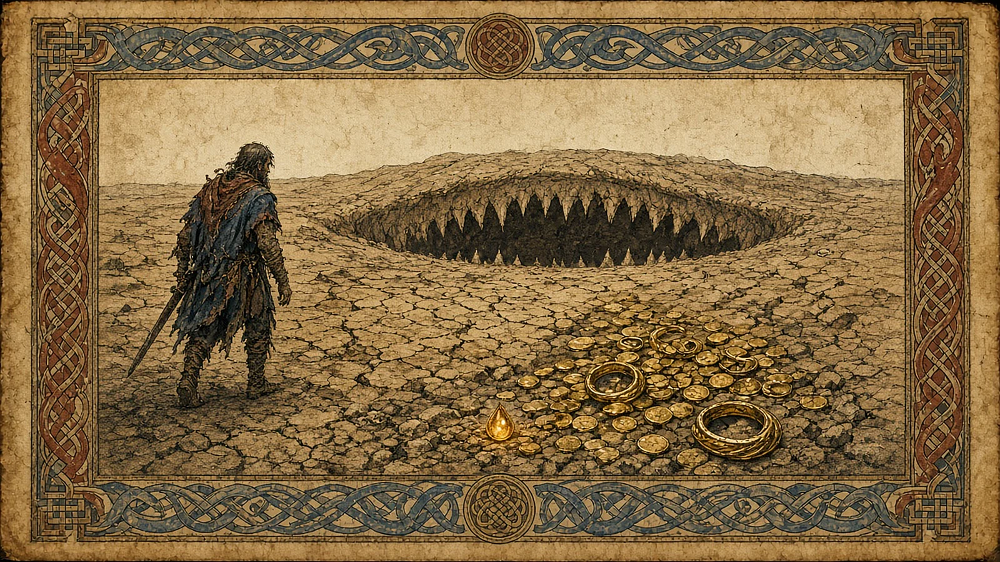
Se le rompe matándolo de hambre. Hay que atraerlo con comida y con oro, ponérselo delante y luego negárselo. Mientras dura el combate, nadie puede comer ni un bocado, porque lo que comes tú lo come él. Basta que uno solo de los que luchan saque el pan del zurrón para que la boca se cierre un poco más sobre todos.
Estrofa de la décima celda
Boca del borde, buche sin fondo,
traga y no tiene tripa que se llene;
oro le ofreces y hambre le otorgas:
niégale el pan y que nadie lo nutra.
Su nudo es un hueso roído, sin carne y sin tuétano.
El nudo de hueso abre el último foso, el más ancho: el agua que traga. Es un mar quieto, sin viento, donde la barca apenas avanza y el pan mengua solo en el zurrón. Quien lo cruza sin el nudo se muere de hambre a bordo antes de ver la otra orilla, aunque lleve la bodega llena.
Al final está Hoggstad, el lugar del golpe, y entenderás por qué el centro de la cárcel es también el borde del mundo. Valgrund es como el corte de la rama que lo sostenía: tiene sus anillos, y en el medio, donde estaba el corazón de la madera, está la herida. El centro se asoma al vacío. Hoggstad es una isla de acantilados en anillo, y en su centro no hay tierra: hay una sima que da al vacío, por donde las ramas entraban en el mundo. Esa es la herida.
Allí se alzan los Askstufar, los tocones, lisos como mesas, tan altos que tienen nubes en la cumbre. Al lado arrancan los estribos de Bruarspord, el puente roto, que suben unos pasos hacia el cielo y se acaban en el aire. De madrugada todavía se cubren de rocío, aunque ya nadie sube a lamerlo. En el suelo de roca, entre los tocones, está el pozo gris, el del olvido, quieto y opaco, y si bebes de él o te caes dentro, te olvidarás de algo que sabías hacer con las manos. Aquí no hay nada nuevo que sacar de la tierra: lo único que sirve es lo que has aprendido por el camino.
Y alrededor del pozo están las once celdas.
Diez son pozos sellados con losas de piedra lisa, todas iguales. Las ataduras no se ven: bajan por dentro del pozo, hacia el agua de cada anillo, y arriba solo queda la piedra. Por debajo de cada una se oye, si pegas la oreja, la respiración lenta de una corriente que duerme en su anillo, lejos.
La undécima es la primera que encuentras al llegar, delante de las otras, y está abierta. No tiene losa ni atadura. El brocal está pulido, como si algo lo hubiera rozado mucho tiempo al pasar. Dentro no hay nada. Ni agua, ni huesos, ni sombra. Solo sale viento.
Es el viento del borde, el que sopla siempre hacia fuera en Hoggstad y empuja a los incautos hacia el vacío. Antes salía de la herida. Hoy sale de la celda. Arrastra polvo, plumas sueltas y, a veces, un sonido.
Los Gleymdir llamaban a su ocupante Elifti, «el undécimo», y no le dieron otro nombre. No le pusieron un nombre de miedo, como a los demás, porque no le vieron la forma o porque la vieron y no quisieron hablar de ella. No sé si estuvo alguna vez en esa celda. No sé si el undécimo nudo se cerró y se abrió después, o si no llegó a cerrarse nunca. Ya te dije que el árbol no lo sintió, o no quiso sentirlo.
Lo que sé es lo que oigo cuando el viento pasa por el ámbar. A veces suena como una llamada. No te diré a quién llama, porque no lo sé. Solo te diré que se parece mucho a otra.
Estrofa de la undécima celda
Undécima urna, hueca y sin huésped,
(Este verso está en blanco.)
ansia sin asa, aire que se aleja,
llama con la lengua de los que llaman.
Te falta saber una cosa más de la cárcel, y es la más fea.
No todos los carceleros fueron fieles. Al principio, en las generaciones que siguieron al corte, hubo Gleymdir que bajaban de noche a los nudos y los aflojaban, una vuelta, dos vueltas, a escondidas. No querían soltar a los Once, o eso decían. Querían que el río volviera a darles algo: los salmones, la cosecha, la fuerza en el brazo o la venganza que no podían cobrarse solos. Una corriente atada no da nada. Una corriente que se revuelve en su sueño, sí. Y una despierta da más que nadie.
Así sigue siendo. Quien quiera puede acercarse a un preso despierto y ofrecerle algo. El preso aceptará, y le dará un don de verdad, y se lo cobrará de verdad, como se lo cobró el río a la Tañedora, sin decir el precio hasta el día de cobrarlo. Mientras su preso esté atado, sus dones callan. Por eso quien hace ese trato quiere que su preso despierte, y por eso desata nudos, hace ofrendas y defiende la forma cuando otros vienen a romperla. Y cada preso tiene un solo favorito a la vez, así que los que adoran a la misma corriente acaban por matarse entre ellos.
Tendrás esa tentación. Todos la tienen. Yo no te diré qué hacer con ella, porque soy una gota y las gotas no aconsejan. Solo te diré que la Tañedora lloró la noche en que ató a su río, y que, aun así, lo ató.
Capítulo 12. Tres inviernos sin verano
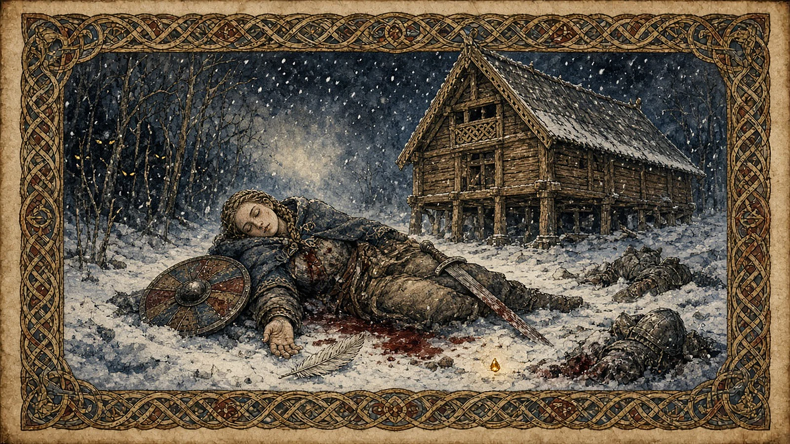
Halveig, hija de Orm, se llamaba como la roca y como su padre. Halveig quiere decir «fuerza de la roca», y Orm, «serpiente». Vivía en un fiordo del norte de Midgard, donde los inviernos siempre habían sido largos y los veranos cortos. Aquel año no hubo verano.
La nieve llegó en la época de la siega y no se fue. Cayó de lado, desde el mar y desde los montes a la vez, como si el viento no supiera de dónde soplar. El sol salía, pequeño y blanco, y no calentaba. Los corderos nacieron muertos. En la primavera siguiente, que no fue primavera, la nieve seguía allí, y el hielo no soltó las barcas. Y el tercer año, cuando ya nadie se atrevía a decir en voz alta lo que todos pensaban, la gente dejó de cumplir sus juramentos.
Halveig vio a dos hermanos matarse por un saco de cebada. Vio a un hombre al que conocía de toda la vida quemar la casa de su vecino con el vecino dentro, para quedarse con sus vacas. Vio lobos en la aldea a pleno día, flacos como palos, que no huían de nadie. Los viejos dijeron lo que dicen los viejos, que habían conocido inviernos peores. Mentían. Ese invierno tiene nombre, aunque nadie quería decirlo: el Fimbulvetr, «el gran invierno», tres inviernos seguidos sin verano entre ellos, el que viene antes del final.
En el borde del cielo, las valquirias también lo vieron.
Estaban todas, las que oyen el cantar. Miraban hacia abajo, hacia los nueve mundos, y veían la nieve sobre Midgard, los hermanos con los cuchillos y los lobos en las aldeas. Sabían lo que venía después, porque la vidente lo contó y ellas lo escucharon. Luego miraron hacia el otro lado, hacia el vacío, donde pasaba una tierra pequeña de once anillos con los fosos apagados, flacos y casi grises.
—Ha vencido —dijo Skuld.
No dijo más. En su boca, aquellas dos palabras pesaban como su propio nombre: lo que será y lo que se debe. El plazo había vencido. Las corrientes estaban tan flacas que unos mortales podían atarlas, y el mundo se acababa lo bastante deprisa como para no esperar más.
Gondul se ajustó el casco, que hacía siglos que no se ponía para nada que no fuera servir. Las otras hicieron lo mismo. Bajaron sobre Midgard en vuelo abierto, inclinadas, como bajan siempre a recoger lo que es suyo.
Halveig murió defendiendo un granero.
No era suyo. Era de la aldea, lo último que quedaba, y una noche llegaron a por él veinte hombres de otro fiordo con hachas y antorchas. Ella tenía un escudo, una lanza y cuarenta inviernos, de los cuales el último había sido muy largo. Se puso delante de la puerta. Mató a dos. El tercero le partió el escudo, y el cuarto, que era joven y tenía miedo, le metió la lanza por debajo de las costillas.
Cayó de espaldas en la nieve. Los hombres pasaron por encima de ella, abrieron el granero y se llevaron lo que había, que no era mucho. Las huellas se fueron alejando hacia el fiordo. Ella se quedó mirando el cielo, que era blanco y bajo, con un sol pequeño como una moneda gastada.
No vio ninguna valquiria. Nadie las ve. Notó un peso, como cuando un pájaro grande se posa en una rama sobre tu cabeza. Notó frío, más frío que el de la nieve. Y junto a su mano abierta, sobre la nieve, cayó una pluma blanca de cisne que no hacía sombra.
Entonces oyó la voz. No venía de ninguna parte ni tenía cara. Era una voz de mujer, cansada y dulce, que le hablaba muy cerca del oído, como se le habla a una niña que tiene fiebre:
Lo que dicen las que eligen
Levántate, lanza, la lucha no ha acabado:
tierra te espera tomada por los once,
muertos sin morada que mendigan su marcha.
Ata a los once, abre los túmulos,
limpia la tierra, libera a los que lloran,
y a casa, al cabo, caída, te traeremos.
Halveig quiso preguntar qué casa. No le quedaba aliento para preguntar nada. Cerró los ojos con la palabra casa en la boca, y la palabra le supo a pan caliente y a fuego de turba, a la casa de su padre en el fiordo, a todo lo que ya no había.
Tú sabes lo que la voz no dijo. Lo sabes porque estuviste conmigo en el puente. No le mintió en nada: hay una tierra tomada por los Once, hay muertos que esperan y hay una casa. Lo único que le calló fue de quién era la casa.
Halveig no fue la primera. El primero llegó unas lunas antes, cuando el gran invierno acababa de empezar.
Nadie vio llegar el barco. Los barcos que traen a los caídos no se ven llegar. Las que los traen no pueden pisar la orilla, así que los dejan donde acaba el vacío y empieza la marea, y la marea hace el resto. Aquella madrugada, la playa de Valfjara amaneció cubierta de rocío, un rocío grueso y brillante como el que cubría el puente cuando aún había puente, aunque llevaba milenios sin caer allí. Entre los barcos viejos, grises y medio enterrados, había uno nuevo, de madera clara, con la quilla aún mojada.
Dentro había un hombre tumbado con el escudo sobre el pecho, como se tumba a los muertos con su ajuar. Tenía la barba escarchada y una pluma blanca junto a la mano. Al salir el sol detrás de los tocones, se movió. Se incorporó sobre un codo, y el escudo le resbaló del pecho y golpeó la tablazón.
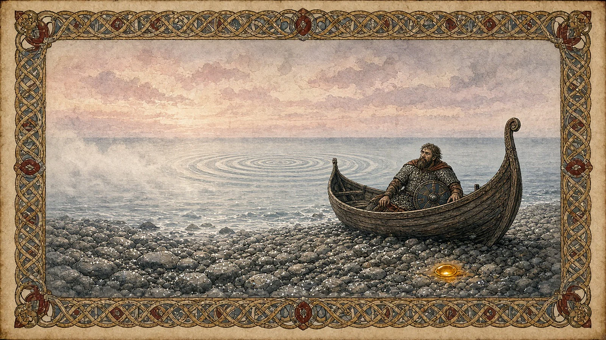
Se llamaba Ketil, que quiere decir «caldero». Es lo único que recordaba de sí mismo: su nombre, que había muerto y que sus manos sabían hacer fuego. No recordaba de dónde venía. Se sentó en la borda mucho rato mirando el horizonte, donde los tocones se alzaban como una montaña, y después bajó a la arena y empezó a recoger ramas.
Lo conocerás. Es el que enseña a los recién llegados a mirar, a recoger ramas y a encender su primer fuego, porque fue el primero en aprenderlo.
Después de Ketil llegaron otros, uno cada pocas madrugadas, cada uno en su barco y cada uno con su rocío. Llegó Halveig, con la pluma en la mano y la palabra casa todavía en la boca. Desde entonces no han dejado de llegar. Despiertan en la playa sin memoria y sin nada, salvo un cuchillo y un pedernal, y se ponen a recoger ramas porque no saben qué otra cosa hacer. Y la ola que no rompe, al fondo, los mira llegar.
Epílogo. A las puertas de Valfjara
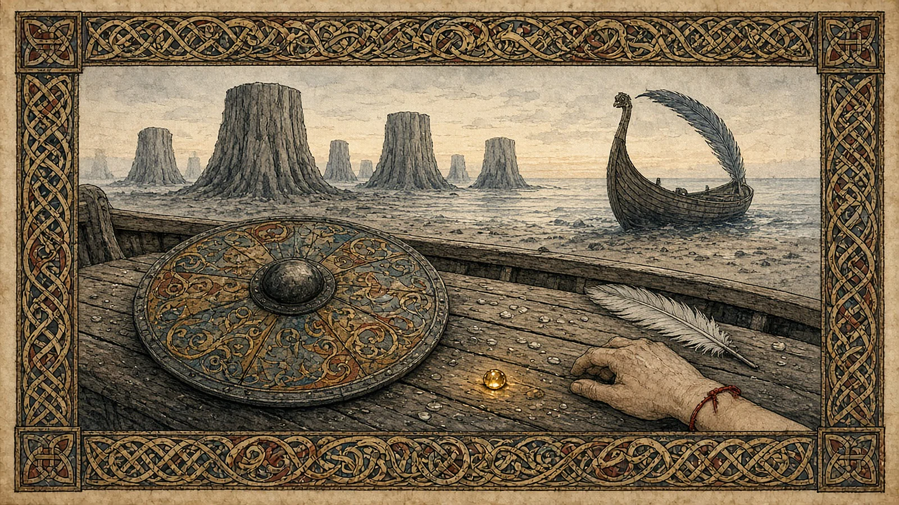
Ya casi está. Noto que el ámbar se enfría en tu mano, y eso quiere decir que te falta poco.
No sé cómo caerás. Puede que en una batalla de verdad, con canciones, o puede que delante de un granero, en la nieve, sin que nadie se entere. Da igual. Lo que viene después es igual para todos, y te lo voy a contar para que no te asustes más de lo necesario.
Abrirás los ojos tumbado en un barco. Lo primero que verás será el cielo, pálido y quieto, enmarcado por las bordas, con unas estrellas que no forman ninguna figura que conozcas. Tendrás el escudo sobre el pecho, como un muerto con su ajuar. Te dolerá algo que no sabrás nombrar. Y levantarás una mano delante de la cara para comprobar que todavía es tuya.
En la muñeca llevarás un hilo rojo atado, cortado a un dedo del nudo. No podrás quitártelo. Es tu hebra, o lo que queda de ella: el telar de las nornas no llega hasta aquí, y aquí nadie tiene destino. En la borda, junto a la mano, habrá una pluma blanca de cisne que nadie ha traído. La tablazón estará mojada de rocío, y en la madera, junto a tu mano, alguien habrá grabado en runas una sola palabra: skuld. La verás también en las piedras de la playa, muchas veces. Ya sabes lo que quiere decir. Quiere decir las dos cosas.
Cuando te incorpores, notarás en el pecho una cicatriz fina, como de punta de lanza, que antes no tenías. Y al mirar por encima de la borda verás, al otro lado de muchas aguas, en el horizonte, una montaña que no es una montaña: los tocones. Desde la playa parecen muy lejos, y lo están.
No recordarás casi nada. La sombra de la garza todavía cubre esta tierra y te quitará lo que sabías. Te dejará tu nombre, tu muerte y lo que saben tus manos. Lo demás irá volviendo, poco a poco, cuando toques las cosas. Y un día, recogiendo ramas o mirando el estrecho, te subirá a la boca, sin que la llames, una canción de cuna que hablaba de once ríos.
Escúchala. Es lo único que traes que los de aquí no tienen.
Ahora escucha esto también, aunque no sepa decirte qué significa.
No todos los barcos de la playa llegan iguales. Casi todos traen la pluma blanca y el rocío dulce, como el tuyo. Pero alguna madrugada, en algún barco de más allá, la pluma no es de cisne. Es gris azulada, más rígida, con escarcha en las barbas aunque no haga frío, y huele a sal. Y el rocío de esa borda, si lo pruebas, sabe amargo.
No sé quién trae esos barcos. Sé que la voz que oyen sus muertos al morir es muy parecida a la que oyó Halveig. Tan parecida que ellos no notan la diferencia. Y sé que en Hoggstad hay una celda vacía de la que sale un viento que, a veces, suena como una llamada.
Mira las plumas. Es todo lo que puedo decirte.
Te dirán que vienes a limpiar. Es verdad. Te dirán que hay muertos antiguos que esperan. Es verdad. Te dirán que después te llevarán a casa. También es verdad, a su manera.
Lo que hagas con lo que te he contado es cosa tuya. Puedes atar a los Once, uno detrás de otro, de la sal al centro, y cerrar la cárcel que dejó a medias un dios que ya no se acuerda. Puedes ofrecerte a alguno de ellos, como hicieron algunos Gleymdir, y vivir de sus dones hasta el día en que te pase la cuenta. O puedes hacer lo que no ha hecho nadie todavía: cuando hayas atado lo bastante, mirar hacia el borde del cielo y preguntar en voz alta de quién será la casa.
Recuerda solo una cosa más, la que en esta tierra sirve para todo. Lo que llevas encima muere contigo: se queda en el suelo donde caes y lo coge el primero que pasa. Lo que sabes, no. Eso no te lo quita nadie, salvo el pozo gris.
Y recuerda lo primero que te dije, porque es lo último que te digo:
Estrofa de cierre
Mira la miel que en tu mano madura:
nueve los nombres y el nuestro, ninguno.
Duerme, decían, que duermen los once;
despierta, te digo, que el dique se deshace.
Ata o desata, elige tu orilla:
lo que se recuerda vuelve a ser rama.
Ya está. Noto el frío. Abre los ojos.
La marea está baja y la arena de Valfjara es gris. Hueles a sal. Te pones en pie.
Compuesto en EB Garamond e IM Fell English, con iniciales en Cormorant Garamond, adornos en UnifrakturMaguntia y runas en Noto Sans Runic, todas con licencia SIL Open Font License. Valgrund, edición generada el 7 de octubre de 2026. Volver al índice.